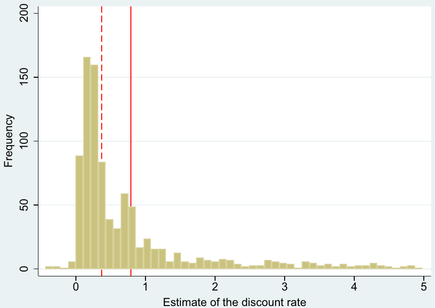
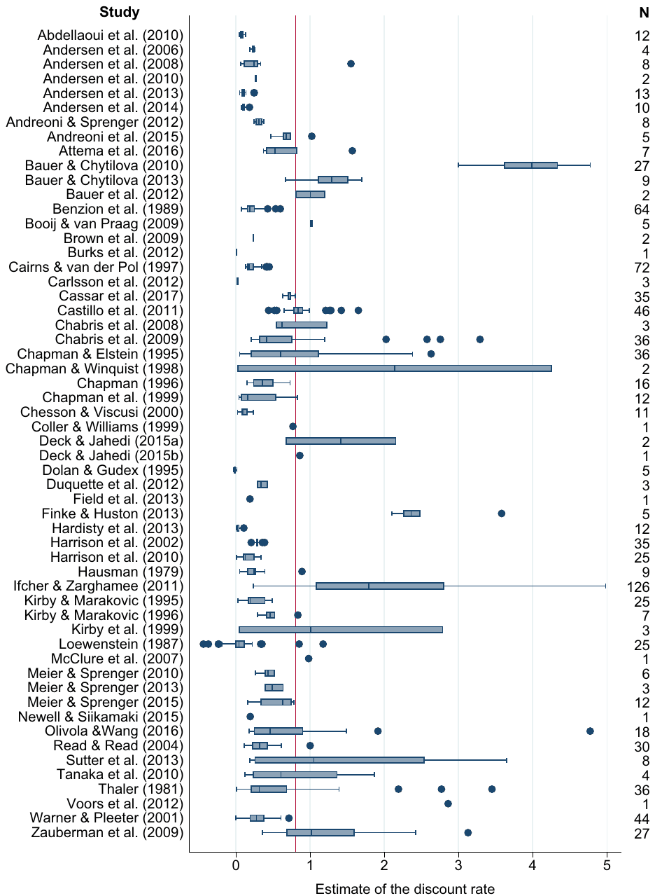
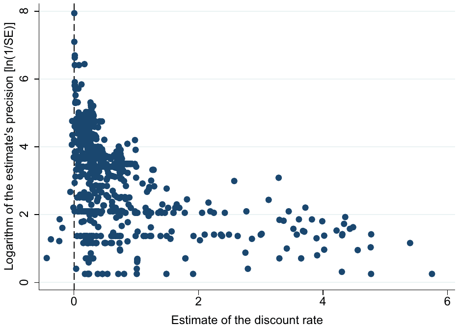
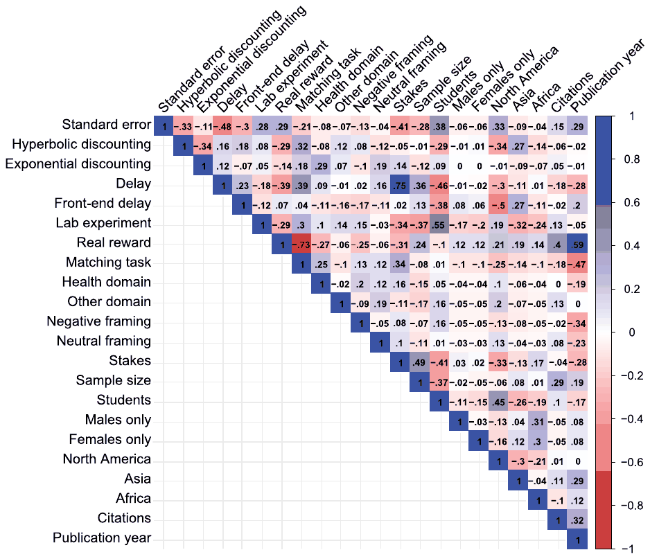
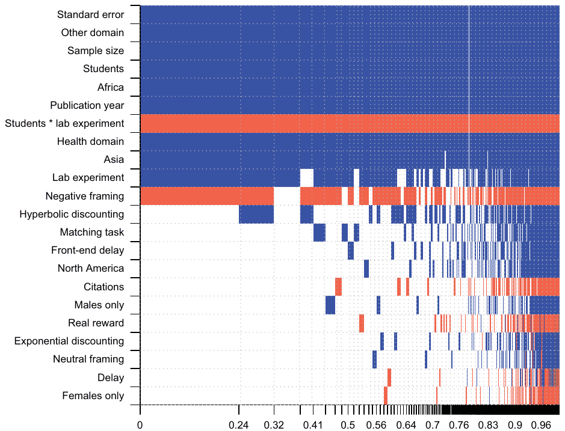

Individual Discount Rates: A Meta-Analysis of Experimental Evidence
Jindrich Matousek, Tomas Havranek, and Zuzana Irsova (2022), "Individual Discount Rates: A Meta-Analysis of Experimental Evidence." Experimental Economics 25(1), 318-358. https://doi.org/10.1007/s10683-021-09716-9.
Jindrich Matousek1 · Tomas Havranek1 · Zuzana Irsova1
1 Institute of Economic Studies, Faculty of Social Sciences, Charles University, Prague, Czech Republic
Abstract
A key parameter estimated by lab and field experiments in economics is the individual discount rate—and the results vary widely. We examine the extent to which this variance can be attributed to observable differences in methods, subject pools, and potential publication bias. To address the model uncertainty inherent to such an exercise we employ Bayesian and frequentist model averaging. We obtain evidence consistent with publication bias against unintuitive results. The corrected mean annual discount rate is 0.33. Our findings also suggest that discount rates are independent across domains: people tend to be less patient when health is at stake compared to money. Negative framing is associated with more patience. Finally, the results of lab and field experiments differ systematically, and it also matters whether the experiment relies on students or uses broader samples of the population.
Keywords: Discount rate · Experiment · Publication bias · Meta-analysis · Bayesian model averaging · Frequentist model averaging
JEL Classification D01 · C83 · C90
1. Introduction
Intertemporal trade-offs are key to a host of decision problems at both the private and public levels. For some of these decisions, it is appropriate to employ the market discount rate, which is detectable from financial time series. For others, however, we must try to recover the underlying discount rates of individuals—rates that also reflect the underlying transaction costs of borrowing money that households face (Kovacs and Larson 2008). Policies addressing climate change, particularly those underpinned by the literature on the social cost of carbon, constitute a typical example of choices for which individual discounting of future costs and benefits plays a crucial role (Tol 1999; Goulder and Stavins 2002; Fujii and Karp 2008; Anthoff et al. 2009).
Individual discount rates can be either observed from existing data (such as in Lawrance 1991; Dreyfus and Viscusi 1995; Warner and Pleeter 2001) or measured experimentally (Benzion et al. 1989; Chapman and Elstein 1995; Coller and Williams 1999; Harrison et al. 2010, among others). We focus on the latter: experiments. Controlled experiments provide a natural framework for exploring time discounting in both laboratory and field conditions by enabling researchers to vary the parameters in order to infer the subject's preferences. However, despite decades of work and dozens of experiments devoted to eliciting time preferences, no consensus on how to best measure discounting has emerged (Andreoni et al. 2015). It is safe to say that the discount rate differs across individuals and its estimates vary a great deal throughout the literature, sometimes by orders of magnitude (Coller and Williams 1999; Frederick et al. 2002).
In this paper we take stock of the evidence and aim to trace the differences in the reported discount rates to the design of experiments while accounting for model uncertainty. We also control for the effects of potential selective reporting, a phenomenon found to be widespread in economics and other fields (Doucouliagos and Stanley 2013; Ioannidis et al. 2017). Focusing on aspects related to study design, methodology, and subject pool characteristics, we collect a set of 22 explanatory variables and employ Bayesian model averaging (BMA; Raftery et al. 1997) and frequentist model averaging (FMA; Hansen 2007) to examine which ones matter the most for the differences among the reported estimates. Model averaging techniques estimate many regressions with various combinations of the 22 variables and then weight the models according to data fit, parsimony, and collinearity.
The closest work to our own is the meticulous meta-analysis by Imai et al. (2021a), who employ a similar methodology but focus on the present-bias parameter estimated using the convex time budget protocol. They find that the literature implies the present-bias parameter to lie between 0.95 and 0.97 on average and describe the sources of heterogeneity: for example, experiments that use monetary rewards tend to find little evidence of present bias. Other related recent studies include Brown et al. (2021), who meta-analyze the estimates of loss aversion, Imai et al. (2021b), who estimate the degree of publication bias in laboratory experiments in economics, and a series of important works evaluating the replicability of experiments in economics and other social sciences (Camerer et al. 2016, 2018; Altmejd et al. 2019).
Our results are consistent with the notion that selective reporting (which causes publication bias) represents an important factor in the literature. When selective reporting is present, insignificant and negative estimates are discriminated against. A zero or negative discount rate, of course, makes little sense in most contexts. Nevertheless, given sufficient noise in the experimental setup, we should sometimes observe insignificant estimates and sometimes very large positive estimates. If non-positive estimates (which are unintuitive) are discarded but large positive estimates (for which it is difficult to determine whether they are intuitive or not) are kept, harmful publication bias arises. This outcome is paradoxical because selective reporting can be beneficial at the micro level: for an individual study, it is most likely a wise choice not to build the story around negative or insignificant estimates of the discount rate. However, at the macro level, the discarding rule is asymmetrical since large estimates are typically not omitted. Our findings indicate that such publication bias is associated with exaggerating the mean reported annual discount rate from 0.33 to 0.80.
Aside from publication bias, which manifests as a correlation of the discount rate estimates with their standard errors, the differences in results seem to be caused primarily by the experimental design of discounting tasks. We find evidence in line with domain independence (defined as the low correlation between discount rates for different domains) in intertemporal choice (Loewenstein et al. 2003; Ubfal 2016): it matters what the experimental subjects should be patient or impatient about. Subjects are more patient with regard to money than health or more exotic contexts (such as vacations, certificates, and kisses from movie stars). The results support the hypothesis that liquidity constraints play a key role in intertemporal choice experiments (Dean and Sautmann 2021), since health and kisses from movie stars are more difficult than money to transfer over time (Bleichrodt et al. 2016). We also find that negative framing is associated with more patience, which corroborates the notion that anticipation of dread is important in intertemporal decisions (Harris 2012).
Our results offer three broad implications for economics experiments in general. First, it matters whether the experiment is conducted in the lab or in the field. Lab experiments yield systematically larger discount rates, indicating greater impatience. Second, the composition of the sample of experimental subjects (the subject pool) has a systematic impact on the results. Experiments working exclusively with students show less evidence for patience than experiments using mixed population samples. Taken together, these two results might question the external validity of some experiments. Third, we show that it does not matter systematically for the reported discount rates whether experiments use real or hypothetical rewards.
Three caveats of our results are in order. First, we are unlikely to cover all experiments ever conducted on the discount rate. Nevertheless, a meta-analysis does not have to collect the entire universe of available studies; it is important only to avoid selecting studies based on their results. Second, fewer than two-thirds of the collected estimates are reported together with a measure of uncertainty from which we can directly compute standard errors. We address this problem partially by resampling standard errors at the study level for observations with missing data. (Limiting our attention to the studies that explicitly report precision would not change our main results.) Third, although we control for the differences in many features of study design, experiments involve unique methodological as well as procedural details that are difficult to codify but that can cause differences in the results of individual studies. Some of these unobserved features might be correlated not only with the reported discount rate but also with the reported standard error, which might make our results concerning publication bias spurious. We partially address this problem by using study fixed effects, caliper tests, p-uniform*, and by employing the number of observations in primary studies as an instrument for the standard error.
The remainder of the paper is structured as follows. Section 2 reviews the basic concepts of discounted utility models and discusses the methods of discount rate elicitation. Section 3 describes our approach to data collection and presents an overview of our dataset. Section 4 examines the extent of publication bias using meta-regression and other meta-analysis techniques. Section 5 investigates the sources of heterogeneity in the estimated discount rates using Bayesian model averaging. Section 6 concludes the paper. Supplementary data, codes, statistics, and diagnostics for the BMA and robustness checks to all analyses presented in the main body are available in Appendix A, Appendix B, and online at meta-analysis.cz/discrate.
2. Estimating the discount rate
In this section we do not attempt to provide a comprehensive review of the methodology used to measure discounting but briefly describe the basic concepts that are necessary for the understanding of our meta-analysis. For a more detailed treatment, we refer the reader to the authoritative works by Frederick et al. (2002), Andersen et al. (2014), Cheung (2016), and Cohen et al. (2020).
The theory of intertemporal choice and discounting dates back to Irving Fisher's Theory of Interest (Fisher 1930) and Paul Samuelson's Note on Measurement of Utility, in which he postulated the discounted utility model (Samuelson 1937). His model was widely accepted together with its central idea of concentrating various decisions about intertemporal choice into a single parameter—the discount rate. Several modifications to the original discount function have been introduced to capture various features, such as hyperbolic (Ainslie 1975; Mazur 1984) or quasi-hyperbolic (Phelps and Pollak 1968; Laibson 1997) discounting functions.
The discounted utility model captures the time preferences of an individual—more specifically, an individual's preference for immediate utility over delayed utility, represented by her intertemporal utility function , which can be described by the functional form presented in Eq. 1:
where is the discount function and is an instantaneous utility function that can be interpreted as an individual's well-being in period . The discount function represents the relative weight that the individual places in period on her well-being in period and encompasses parameter , which represents the individual's discount rate. This discount function can have different functional forms.
The standard exponential model, a well-known functional form used in the majority of practical applications, follows:
where the discount rate is . The key feature of this model is that the discount rate is constant over time, i.e., the rate at which an individual discounts future well-being between today and tomorrow is identical to the rate at which she discounts well-being between one month from today and one month from tomorrow. In contrast, a widely documented situation in which an individual has a declining rate of time preference is described as hyperbolic discounting, which generally means that the implicit discount rate over longer time horizons is lower than the implicit discount rate over shorter time horizons. A typical case from the family of hyperbolic discounting functions proposed by Mazur (1984) is described in Eq. 3:
where the hyperbolic discount rate (Andersen et al. 2014).1 Phelps and Pollak (1968) further introduced a quasi-hyperbolic specification of the discount function for use in a social planner problem:
where and the quasi-hyperbolic discount rate .2 A characteristic feature of the quasi-hyperbolic specification is the discontinuity at time . This specification was applied by Laibson (1997) to model individual agent behavior.
Several experimental methods are available to elicit time preferences in both laboratory and field settings, such as lotteries, choice lists, and bidding; however, there is no consensus on how to best measure discounting (Andreoni et al. 2015). The basic method for eliciting individual discount rates is conceptually simple—asking subjects questions about whether they prefer an amount of money today (option A) or the same amount + $X tomorrow (option B). By changing X, a researcher can infer bounds for the subject's individual discount rate.3 Experiments therefore involve a series of questions aligned in lists, such as in the classical choice list design of Coller and Williams (1999) or Harrison et al. (2002). Modifications to this basic method are further used to elicit preferences more precisely, such as variations in the delay between options A and B, the domain in which preferences are revealed (money, health, etc.), and the magnitude or the nature of the reward (hypothetical or real).
Several types of elicitation methods are routinely used in the experimental literature (Frederick et al. 2002): (1) choice, (2) matching, (3) rating, and (4) pricing. The most common type of elicitation is the choice method, where subjects are presented alternative options and are asked to simply choose between them. This method provides discount rate intervals pre-generated by the experimenter rather than precise estimates of the discount rate for specific individuals. The matching method, in contrast, provides an exact inference of the individual's discount rate since she reveals her true indifference point by filling thessss blank field to equate two intertemporal options. In rating tasks, subjects evaluate individual options by rating their attractiveness on a predefined scale, while in pricing tasks, subjects specify their willingness to pay for individual options in which they either obtain or avoid a particular outcome. Isn contrast to choice and matching tasks, rating and pricing tasks allow the researcher to manipulate the time variable between subjects since immediate and delayed options are evaluated separately.
Each method described briefly above has its strengths and limitations. When subjects are asked to evaluate multiple options at once in a standard choice list, the earlier choices inevitably influence the choices made later. This procedural limitation—the anchoring effect—can be partially addressed by employing titration procedures and exposing subjects to a sequence of different opposing anchors (Frederick et al. 2002). The timing of an outcome was found to have a much lower effect when evaluating a single option compared to a situation when two options occurring in different times are evaluated against each other at once (Loewenstein 1987). The timing of two evaluating options is further argued to cause the more general problem of an additional risk or transaction costs imposed on the future option. The recent literature, represented by Harrison et al. (2005), Andersen et al. (2014), and others, deal with this risk by employing a front-end delay, thereby shifting the immediate option to the nearer future and imposing transaction costs on the instant payoff.
Harrison et al. (2005) argue that standard choice tasks often executed through multiple price lists (MPL) have three possible disadvantages: (1) they elicit only interval responses; (2) they allow subjects to switch back and forth while moving down the list; and (3) they can be subject to framing effects. Harrison et al. (2005) therefore introduces an iterative Multiple Price List (iMPL) that allows the subjects to iteratively specify their choices through refined options within an interval chosen in the last option.
The inference of discount rates from the experimental task depends on the utility function presented in the discounted utility model (Eq. 1). This function, however, is unobserved and therefore usually assumed to be linear, generating biased estimates for individuals with non-linear utility functions (Cheung 2016). Recent papers by Andersen et al. (2008, 2014) use the joint elicitation strategy to measure time preferences by controlling for non-linear utility. Using the equivalence of utility for risk and time, these authors use a series of binary choices to infer the discount function conditional on the utility function elicited through Holt and Laury (2002)'s risk preference task. Further modifications of the design to measure time preferences by controlling for non-linear utility include, among others, the work of Laury et al. (2012), who interact risk with time using a lottery to be paid out with probability in time and with probability in time , where and vary through the choice list. Further experiments measuring time preferences while controlling for non-linear utility are conducted by Takeuchi (2011), who employs separate choices under risk and over time using matched pairs of payoffs; Andreoni and Sprenger (2012), Andreoni and Sprenger (2012b), and Andreoni et al. (2015), who examine risk and time preferences through individual elicitation methods—convex time budgets and double multiple price list tasks—and Attema et al. (2016), who introduce a direct method to measure discounting that is not dependent on the knowledge or measurement of utility.
An alternative method for inferring discount rates was devised by Chabris et al. (2008b), who not only derive intertemporal preferences from standard choice tasks but also adopt an approach of using response times from these choices, i.e., how long it actually takes the subjects to choose between option A and option B. The authors assume that "subjects should take longest to decide when the two options are most similar in their discounted values" and therefore argue that the inference from response times should, in principle, work (Chabris et al. 2008, p. 7). The results of Chabris et al. (2008) suggest that choice-based and response-time-based estimates are nearly identical in their setting.
3. The dataset
The first step of a meta-analysis is the collection of primary studies. To this end, we search Google Scholar for the literature on discounting and then examine the references of the retrieved studies to search for other usable studies (this method is called "snowballing" in the meta-analysis context). We use Google Scholar because it provides powerful fulltext search. Specifically, we employ the following query: discount method experiment "discount rate" OR "discount factor." The query is designed to yield the well-known experimental studies on discounting among the first hits, while being sufficiently inclusive. We go through the first 300 studies returned by the search and examine the abstract of each paper. If the abstract suggests at least a remote possibility that the paper contains estimates of the discount rate, we download the paper and inspect it; this way we inspect 178 studies. Next, we collect the references of these studies and download the 30 papers that are most often quoted in the literature but are not returned by our baseline Google Scholar search.
We apply three inclusion criteria. Each study included in our dataset must be an experiment, either lab or field, and must report an estimate of the discount rate (or the discount factor in a way that allows re-computation to the discount rate). Next, we exclude estimates of the discount rate derived from very short delays (several hours)—these are extreme cases for which it is often difficult to find use in practice. Finally, we include only studies published in peer-reviewed journals. The major reason for the last inclusion criterion is feasibility, but we also hope that peer review sets a bar for quality. Moreover, journal articles generally contain fewer typos and other mistakes in the presentation of results compared to unpublished manuscripts
| Abdellaoui et al. (2010) | Castillo et al. (2011) | Ifcher and Zarghamee (2011) |
|---|---|---|
| Andersen et al. (2006) | Chabris et al. (2008) | Kirby and Marakovic (1995) |
| Andersen et al. (2008) | Chabris et al. (2009) | Kirby and Marakovic (1996) |
| Andersen et al. (2010) | Chapman and Elstein (1995) | Kirby et al. (1999) |
| Andersen et al. (2013) | Chapman and Winquist (1998) | Loewenstein (1987) |
| Andersen et al. (2014) | Chapman (1996) | McClure et al. (2007) |
| Andreoni and Sprenger (2012) | Chapman et al. (1999) | Meier and Sprenger (2010) |
| Andreoni et al. (2015) | Chesson and Viscusi (2000) | Meier and Sprenger (2013) |
| Attema et al. (2016) | Coller and Williams (1999) | Meier and Sprenger (2015) |
| Bauer and Chytilova (2010) | Deck and Jahedi (2015a) | Newell and Siikamaki (2015) |
| Bauer and Chytilova (2013) | Deck and Jahedi (2015b) | Olivola and Wang (2016) |
| Bauer et al. (2012) | Dolan and Gudex (1995) | Read and Read (2004) |
| Benzion et al. (1989) | Duquette et al. (2012) | Sutter et al. (2013) |
| Booij and van Praag (2009) | Field et al. (2013) | Tanaka et al. (2010) |
| Brown et al. (2009) | Finke and Huston (2013) | Thaler (1981) |
| Burks et al. (2012) | Hardisty et al. (2013) | Voors et al. (2012) |
| Cairns and van der Pol (1997) | Harrison et al. (2002) | Warner and Pleeter (2001) |
| Carlsson et al. (2012) | Harrison et al. (2010) | Zauberman et al. (2009) |
| Cassar et al. (2017) | Hausman (1979) |
We terminate the search for studies on January 15, 2020. Our final dataset covers 56 studies comprising 927 estimates of the discount rate. Of these, 715 were reported explicitly as discount rates, and the remaining 212 estimates were reported as discount factors that we recomputed to rates according to the corresponding discounting formulas. All discount rates are annualized. The oldest study in our sample was published in 1979,4 and our meta-analysis thus spans four decades of research in the area. An overview of primary studies included in the meta-analysis is presented in Table 1; the full dataset (together with estimation codes for R and Stata) is available in an online appendix at meta-analysis.cz/discrate. We follow the reporting guidelines for meta-analysis compiled by Havranek et al. (2020).

Apart from the key variables for our analysis—the estimated discount rate and its standard error—we codify additional explanatory variables to control for the sources of variation in our data sample. We control for the length of the time horizon presented to the subjects, i.e., the delay of the experimental task. Moreover, we include a dummy variable describing whether the reported estimate relates to hyperbolic or exponential discounting. We further control for whether the study employs front-end delay; if it is performed in the lab or in the field; if payoffs used in the study are hypothetical or real, i.e., paid out at the end of the experiment; what the stakes of the experiment are in terms of the maximum payoff related to median personal expenditure; which elicitation method (choice, matching, and rating) and domain (money, health, and others) is used to identify the estimate; and whether the framing of the task is positive (gaining), negative (losing) or neutral. We also control for the characteristics of the subject pool: whether it contains students or a more general sample of the population; the gender of the subjects it includes (exclusively males, females, or both); and the continent from which the subject pool was drawn. Additionally, we control for study age and the number of Google Scholar citations weighted by the number of years since the first version of the study appeared in Google Scholar. We describe these variables in more detail in Sect. 5, which also includes the corresponding Bayesian model averaging analysis.
The estimated discount rates in our dataset have a mean of 0.80 and a standard deviation of 0.97. A histogram of the estimates is presented in Fig. 1: the distribution is apparently skewed, with a median value of 0.37. Negative values of the discount rate estimates are rare, though present, and often the matter of negative framing (for example, choosing to pay a fine or experience an illness now rather than later). The distribution thus offers several outliers on both sides. We address the potential influence of these outliers on our analysis by winsorizing at the 5% level (the main results are robust to changes in the winsorization level; without winsorizing, the minimum reported discount rate is −0.4, the maximum is 13.7).
To be able to employ modern meta-analysis methods, we need measures of precision for individual estimates. Nevertheless, the standard errors of the discount rate estimates are reported only for 539 of the 927 estimates in our dataset. Researchers in the field sometimes mention that the discount rates they report are large and robust to various changes in the specifications, which constitutes the implicit apology for not reporting precision. As a robustness check (available in the working paper version of this article), we exclude these studies from the dataset and focus only on those for which standard errors can be obtained directly. However, doing so reduces the power of our estimations and does not affect our main results. Therefore, in the baseline case, we also use studies that do not report precision explicitly. To approximate precision at least at the study level, we apply the bootstrap resampling technique. We then combine the explicitly reported standard errors with the standard errors obtained by bootstrapping at the study level.5 The substantial within- and between-study heterogeneity of discount rate estimates, the rationale for a meta-regression analysis, is apparent from Fig. 2.

4 Publication bias
The selective reporting of some estimates (typically those that are intuitive and statistically significant) has been identified as a serious threat to the credibility of empirical economics (Ioannidis et al. 2017).6 When estimation noise is large, and therefore standard errors are large, researchers have incentives to preferentially report large point estimates that become statistically significant. McCloskey and Ziliak (2019) liken selective reporting to the Lombard effect, in which speakers increase their vocal effort in the presence of noise. Selective reporting (which is conventionally called publication bias but is not confined to published papers) thus manifests as a correlation between point estimates and their standard errors.
The general prior among economists and psychologists is that the discount rate is positive. People are impatient; they value the present more than the future. In contrast, a negative estimate of the discount rate means that an individual is willing to accept an offer in the future with a lower value than what is available now, indicating an extraordinary preference for such a state of the world. Negative (and positive but insignificant) estimates are rare in our sample but do occur, which suggests that any potential publication bias in the literature is occasional and not universal. We do not claim that the average discount rate should be zero or even negative. However, the crux of the publication bias problem is the following: with sufficient imprecision and liberal elicitation techniques, we always obtain insignificant or negative estimates from time to time. For the same reason we also obtain large positive estimates. If negative and zero findings are often discarded (they are obviously implausible), while large positive estimates are often retained (it is less obvious whether they are far from the true value), the literature as a whole presents distorted results. The typical reported estimate is biased upwards.

The idea of publication bias is illustrated by Fig. 3, the so-called funnel plot (Egger et al. 1997). The horizontal axis depicts the magnitude of the estimate, while the vertical axis depicts the estimate's precision. With no publication bias, the most precise estimates should be close to the underlying average effect. With decreasing precision, we obtain increasing dispersion, which creates the shape of an inverted funnel. However, in the absence of publication bias, there is no reason for asymmetry in the funnel. If, in contrast, imprecise negative estimates are discarded but imprecise large positive estimates are reported, we obtain asymmetry—which is precisely what we see from the figure. The funnel plot can thus serve as a visual check of publication bias (Stanley and Doucouliagos 2010; Rusnak et al. 2013).
Next, we examine the correlation between the discount rate estimates and their standard errors quantitatively to test for the presence of publication bias (the so-called funnel asymmetry test, Egger et al. 1997):
Here, the is the i-th estimate of the discount rate from the j-th study, is the corresponding standard error, measures publication bias, and is the mean discount rate corrected for the bias; is a disturbance term. The first part of Table 2 shows the results of the funnel asymmetry test; we always cluster standard errors at the study level. The first column in the table shows a simple OLS regression; the second column presents a weighted least squares specification (with precision as the weight) which addresses the apparent heteroskedasticity of Eq. 5.
The results presented in Panel A of Table 2 are consistent with the finding of publication bias: the correlation between estimates and standard errors is statistically significant at least at the 10% level in both specifications and the corrected mean is smaller than the simple uncorrected mean (0.26–0.52 vs. 0.80). But, as Stanley and Doucouliagos (2014) show, while the linear funnel asymmetry test is a valid tool for testing the presence of publication bias, it is not a good estimator of the underlying corrected mean. The reason is that selective reporting is a more complex function of the standard error, and Monte Carlo simulations have shown that a linear approximation does not suffice (Stanley 2008). For this reason, in Panel B of Table 2 we employ more advanced non-linear techniques.
| PANEL A: Linear models | OLS | Precision |
|---|---|---|
| Standard error (publication bias) | 0.535*** (0.0299) | 1.031** (0.449) |
| Constant (effect beyond bias) | 0.518*** (0.114) | 0.259*** (0.0373) |
| Observations | 927 | 927 |
| PANEL B: Non-linear models | WAAP of Ioannidis et al. (2017) | Stem-based method of Furukawa (2021) | Selection model of Andrews and Kasy (2019) | Endogenous kink of Bom and Rachinger (2019) |
|---|---|---|---|---|
| Effect beyond bias | 0.331*** (0.0131) | 0.282*** (0.00915) | 0.252*** (0.0140) | 0.145*** (0.00321) |
| Observations | 927 | 927 | 927 | 927 |
Note: The table reports the results of regression , where denotes the i-th annualized discount rate estimated in the j-th study, and denotes its standard error. Panel A shows estimation by OLS and weighted least squares where estimates are weighted by precision, the inverse of their standard error. Panel B shows the recently developed non-linear estimation techniques; WAAP stands for the Weighted Average of the Adequately Powered estimates. Standard errors, clustered at the study level, are in parentheses. * p < 0.10, ** p < 0.05, *** p < 0.01
The first non-linear technique presented in Table 2 is the Weighted Average of Adequately Powered estimates (WAAP) due to Ioannidis et al. (2017). The technique computes the statistical power of each estimate and uses only those whose power exceeds 80%. From these "adequately powered" estimates Ioannidis et al. (2017) compute a weighted average with weights proportional to the precision of the estimate. From this technique we obtain a mean discount rate of 0.33, which lies between the two estimates we obtained in Panel A (but as we have noted, estimates of the underlying effect derived from linear models in Panel A are not reliable). The second non-linear approach we use is the stem-based technique by Furukawa (2021). The "stem" in the title of the methods refers to the stem of the funnel plot; the technique focuses on the most precise estimates. It follows Stanley et al. (2010), who suggest that "discarding 90% of the [most imprecise] published findings greatly reduces publication selection bias and is often more efficient than conventional summary statistics." (Stanley et al. 2010, p. 70). Instead of discarding an arbitrary portion of estimates, which is generally suboptimal, Furukawa (2021) optimizes the trade-off between efficiency (which decreases when estimates are discarded) and bias (which increases when less precise estimates are included). The cut-off percentage is thus determined endogenously in the model, and in our case it yields an estimate of 0.28 for the mean discount rate.
The third non-linear technique is the selection model developed by Andrews and Kasy (2019). The selection model assumes that the probability of publication changes abruptly after reaching pre-defined thresholds for the t-statistic (in our case: 0, 1.65, 1.96, 2.33). The technique then computes how much estimates from each bracket are over- or under-represented in the literature, and re-weights them accordingly. The selection model gives us an estimate of 0.25 for the mean discount rate. Finally, the fourth non-linear specification we employ is the Endogenous Kink technique introduced recently by Bom and Rachinger (2019). The logic of the estimator is similar to both the linear funnel asymmetry test and the stem-based technique by Furukawa (2021): it also assumes that highly precise estimates are unbiased, but fits the publication bias function using two linear segments. The first segment is horizontal (no bias, therefore no relation between estimates and standard errors for the most precise estimates) and the second segment has a slope equal to the correlation between estimates and standard error for less precise estimates. Bom and Rachinger (2019) show how the "kink" (that is, the point where both segments join) can be identified. The technique yields an estimate of 0.15 for the mean discount rate.
In sum, Table 2 gives us significant estimates for publication bias (Panel A) and estimates of the corrected mean discount rate in the range 0.15–0.33 (Panel B). We prefer to focus on the most conservative estimate from Panel B, 0.33. These results indicate that publication bias exaggerates the mean reported discount rate more than twofold, from 0.33 to 0.80 (the simple uncorrected mean). But again we have to note that our results hinge on the assumption that in the absence of publication bias there is no correlation between estimates and standard errors; even the selection model by Andrews and Kasy (2019) uses this assumption for identification. There are two reasons why the assumption might not hold in the case of the discounting literature, and we thank two anonymous referees of this Journal for articulating the reasons. First, researchers are likely to design the experiment in a way that is tuned to detect discount rates near zero and does not uniformly cover the entire interval of possible rates. Consequently, smaller discount rates are likely to be measured with greater precision, and thus the correlation between estimates and standard errors can arise even in the absence of publication bias. Second, negative estimates of the discount rate can be missing from the literature simply because elicitation techniques used by the researchers do not allow for negative values: for instance, if experimental subjects are always offered a larger sum of money in the future compared with the immediate option.7
While we see no bulletproof way how to measure the quantitative importance of these two caveats for our results, a useful exercise is to conduct a caliper test inspired by Gerber and Malhotra (2008) and Brodeur et al. (2020b). Caliper tests are typically employed to identify a systematic break related to publication bias at a particular psychologically important threshold (such as 0 for the point estimate or 1.96 for the t-statistic). For example, Brodeur et al. (2020b) show how, for many quasi-experimental techniques commonly used in economics, estimates that are just significant at the 5% level (that is, have t-statistics slightly larger than 1.96) are more likely to get published than estimates that are just insignificant. The essence of the caliper test is thus to compare the number of estimates just below and just above a particular threshold: given a sufficiently narrow caliper, there should be no difference. In this paper we use a different tactic and employ calipers of varying width to constrain our baseline linear regression (of estimates on their standard errors) in an attempt to address the important caveats mentioned earlier.
We use two groups of calipers. First, we focus on small estimates, both positive and negative. If the correlation between estimates and standard errors persists when large positive outliers are excluded, the finding of publication bias is not fully driven by the authors designing experiments in a way that is tuned to detect discount rates near zero. Second, we focus on positive estimates approximately around the mean and median of the reported discount rates. If the correlation between estimates and standard errors persists when only safely positive estimates are considered, the finding of publication bias is not fully driven by the impossibility of negative discount rates in many experimental designs. The results of caliper tests of funnel asymmetry are shown in Table 3. Note that here we cannot interpret the means corrected for publication bias (the constant in the regression), because the calipers are arbitrary slices of the data. We can interpret the slopes in this regression, and they all suggest a positive correlation between estimates and standard errors. It is important to point out, however, that we still have to assume that the standard error is exogenous within individual calipers. If there is a mechanical relationship between the estimates and standard errors within calipers in the absence of publication bias, caliper tests fail to address the two caveats.
| Caliper test for | OLS | Precision |
|---|---|---|
| Standard error (publication bias) | 0.0919** (0.0367) | 0.473** (0.190) |
| Constant | 0.214*** (0.0139) | 0.184*** (0.0188) |
| Observations | 538 | 538 |
| Caliper test for | OLS | Precision |
| Standard error (publication bias) | 0.205*** (0.0398) | 0.949** (0.409) |
| Constant | 0.325*** (0.0444) | 0.232*** (0.0313) |
| Observations | 717 | 717 |
| Caliper test for | OLS | Precision |
| Standard error (publication bias) | 0.0835** (0.0395) | 0.536* (0.288) |
| Constant | 0.429*** (0.0351) | 0.371*** (0.0428) |
| Observations | 313 | 313 |
| Caliper test for | OLS | Precision |
| Standard error (publication bias) | 0.125*** (0.0126) | 0.199** (0.0786) |
| Constant | 0.801*** (0.0295) | 0.764*** (0.0341) |
| Observations | 244 | 244 |
Note: The table reports the results of regression , where denotes the i-th annualized discount rate estimated in the j-th study, and denotes its standard error. The regressions only include estimates within the bounds indicated by the caliper. The table shows estimation by OLS and precision weighting. Standard errors, clustered at the study level, are in parentheses. *p < 0.10, p < 0.05, *p < 0.01
Another way to approach this problem is to use techniques that do not need the assumption of zero correlation between estimates and standard errors in the absence of publication bias—or, in the case of one technique, at least not between studies. Table 4 shows the corresponding results. In the first column we apply p-uniform, a brand new technique to test publication bias and estimate the corrected mean. The technique was developed by van Aert and van Assen (2021) for psychology, but it can be applied to an experimental economics setting as well. (In fact, it is probably better suited to experimental economics than the traditional publication bias tests that are designed to aggregate regressions because in experimental research the exogeneity assumption for the standard error is unlikely to hold.) At the basis of p-uniform lies the statistical principle that p-values should be uniformly distributed at the mean underlying effect size: i.e., when testing the hypothesis that the estimated coefficient equals the underlying value of the effect (not necessarily zero). The reported t-statistics and p-values, of course, in almost all cases correspond to tests that relate the estimated coefficient to zero. It follows that if the reported p-values are uniformly distributed, the literature is consistent with a zero underlying effect. The idea of p-uniform* is to find a coefficient at which the distribution of p-values is uniform; this is done by recomputing p-values for various potential values of the underlying effect and then comparing the resulting distribution to the uniform one. Similarly the technique's test for publication bias evaluates whether p-values are uniformly distributed at the simple mean reported in the literature. Technical details and more discussions are available in van Aert and van Assen (2021). The results in Table 4 show evidence of publication bias significant at the 1% level. The mean corrected discount rate is small (0.18) but imprecisely estimated.
| p-uniform* | Instrument | Fixed effects | |
|---|---|---|---|
| Publication bias | Yes*** (0.007) | 0.316* (0.183) | 0.875*** (0.0154) |
| Effect beyond bias | 0.176 (0.663) | 0.633*** (0.158) | 0.341*** (0.00806) |
| Observations | 927 | 927 | 927 |
Note: In the first column the table reports the results of the p-uniform* test for publication bias developed by van Aert and van Assen (2021); p-values are reported in parentheses. For the remaining two specifications, which show regressions along the lines of the first panel of Table 2, standard errors are reported in parentheses and are clustered at the study level. The second column reports an instrumental variable specification (where the instrument for the standard error is the inverse of the square root of the number of observations in a study), and the third column reports a study-level fixed effects specification. *p < 0.10, p < 0.05, *p < 0.01
In the second column of Table 4 we use the inverse of the square root of the number of observations as an instrument for the standard error following Stanley (2005), Havranek (2015), and Astakhov et al. (2019): some method choices in the primary studies can influence both the discount rate and the standard error, which would make our OLS results spurious. (There can also exist a more direct mechanical relationship between estimates and standard errors, as we discussed in the context of the caliper test.) The number of observations is a natural instrument, because it correlates with the standard error by definition. Nevertheless, while not the product of the estimation technique (in contrast to the standard error), in the studies estimating the discount rate the number of observations can be still correlated with the choice of the technique. Therefore the instrumental variable technique cannot be expected to fully address the exogeneity problem. The results in Table 4 indicate publication bias significant at the 10% level and an underlying mean discount rate of 0.63. Finally, in the last column of the table we explore whether publication bias appears within studies. This specification still needs the exogeneity condition to hold within individual studies, but relaxes it between studies as the latter source of variation in discount rate estimates is not used. Once again we obtain evidence of publication bias, now significant at the 1% level, and underlying mean effect smaller than the uncorrected simple mean (0.34 vs. 0.8). Overall we prefer this fixed effects estimation because it is simple, elegant, and its results are consistent with the most conservative non-linear technique presented earlier.
Appendix A harbors four sets of further robustness checks. First, in Table 7 we cluster standard errors at the level of authors instead of studies. Several researchers have co-authored many of the studies in our dataset, and consequently the results of these studies do not have to be independent of each other. We have identified 31 clusters for which no co-authors overlap. The results are almost identical to the baseline case, with the exception of the IV specification, in which we lose statistical significance. Second, in Table 9 we exclude estimates for which the discounting model
is not explicitly specified. Once again the results are similar, but we obtain smaller estimates of the mean discount rate corrected for publication bias.
Third, in Table 10 we run funnel asymmetry tests with the discount rate in the absolute value. Aside from the standard error, on the right-hand side we include the interaction of the standard error and a dummy variable that equals one for negative values. In consequence, this specification reveals different mechanisms of selective reporting for positive and negative estimates. For positive estimates, our findings are consistent with publication probability increasing with an increasing t-statistic. For negative estimates, our findings are consistent with the opposite: insignificant negative estimates tend to be easier to publish, probably because they are more feasible. Fourth, in Table 8 we investigate how publication bias differs between medians and means of individual-specific discounting. To this end, we include an interaction of the standard error and a dummy variable that equals one for median estimates. Medians comprise 15% of the data set, and the results of the table show mixed findings. According to most techniques, there is little difference in the extent of publication bias between means and medians. Our preferred fixed effects specification, however, indicates that median estimates are substantially less biased than mean estimates.
In sum, this section has shown that, similarly to the rest of the empirical research in economics, the experimental literature estimating discount rates is affected by publication selection bias. The finding holds when we relax the classical meta-analysis assumption that estimates and standard errors are independent in the absence of publication bias (the assumption is unlikely to hold in the experimental literature) and apply a battery of recently developed techniques. We find that the mean reported discount rate (0.80) is exaggerated, and our median estimate suggests that the underlying mean discount rate corrected for publication bias is around 0.33. But of course discount rates vary across individuals and experimental context, an issue to which we turn next.
5 Heterogeneity
The substantial differences in the estimates of the discount rate reported in the experimental literature have already been stressed by several previous studies (Frederick et al. 2002; Percoco and Nijkamp 2009; Andersen et al. 2014; Cheung 2016). As Frederick et al. (2002, p. 352) puts it: “While the discounted utility model assumes that people are characterized by a single discount rate, this literature reveals spectacular variation across (and even within) studies.” Figure 2 shows strong differences in the results at the study level. In this section we try to explain the differences by regressing the estimated discount rates on their standard errors together with 21 additional explanatory variables that reflect observable variation in the context in which researchers obtain the estimates. We start from the linear model of publication bias, which is the reason why we retain the standard error variable in the regression. Therefore the second goal of this section is to find out whether our previous findings concerning publication bias prove robust to controlling for heterogeneity.
The first option for estimating such an extended model is simply running a regression with all the collected variables. The problem is that not all the variables are equally important; some are probably redundant, and including all variables would substantially diminish the precision of our point estimates for the effects of the important variables. However, we do not know ex ante which variables are redundant. A common approach would be to eliminate potential redundant variables in a step-wise fashion (sequential t-tests); but in doing so, we can never be sure that we have arrived at the best underlying model. Furthermore, the theory can help us stress some particular variables, but we still do not want to completely ignore the remaining ones. In other words, we face extensive model uncertainty, which is a typical feature of meta-regression analysis. The formal response to model uncertainty in the Bayesian setting is Bayesian model averaging (Raftery et al. 1997), our first method of choice.
Bayesian model averaging (BMA) tackles the problem of uncertainty by estimating models with all possible combinations of explanatory variables in the dataset8 and constructing a weighted average over the estimated coefficients across all these models. The weights used for averaging stem from posterior model probabilities derived from Bayes' theorem and are analogous to information criteria in frequentist econometrics. Posterior model probabilities (PMPs) measure how well the particular model fits the data, conditional on model size. BMA produces posterior inclusion probability (PIP) for each variable, which is the sum of the posterior model probabilities for the models in which the variable is included. Recent applications of Bayesian model averaging in meta-analysis include, for example, Irsova and Havranek (2013); Babecky and Havranek (2014); Havranek and Irsova (2017); Cazachevici et al. (2020); Zigraiova et al. (2021). More details on BMA, including a formal derivation, can be found in Raftery et al. (1997) or Eicher et al. (2011).
The application of BMA, however, is not straightforward since estimating the millions of possible model combinations is infeasible. A solution is to approximate the whole model space by applying the Markov chain Monte Carlo algorithm that walks only through the models with high posterior model probabilities (Madigan et al. 1995). For approximation we use the BMS package for R developed by Zeugner and Feldkircher (2015). Bayesian model averaging is sensitive to the estimation framework, particularly to the use of priors representing the researcher's prior beliefs on the probability of each model (the model prior: how much confidence we place in the prior that, for example, all models have the same probability) and regression coefficients (Zellner's g-prior: how much confidence we place in the prior that, for example, all regression coefficients are zero). In the baseline specification we follow the two priors suggested by Eicher et al. (2011). First, the unit information prior (UIP) for Zellner's g-prior, which assigns the prior that coefficients are zero the same weight as one observation of data. Second, the uniform model prior, which gives each model the same prior probability, irrespective of the number of variables included in the model. Such intuitive priors are agnostic in the sense that they are easily overridden by data, and Eicher et al. (2011) show that they yield good predictive performance.
On top of the uniform model prior we use the dilution prior suggested by George (2010). In this prior the relative weight of each model is further multiplied by the determinant of the correlation matrix of the variables included in the model. The dilution prior is designed to address collinearity: models with high collinearity will have small determinants of the correlation matrix, and therefore little weight in our implementation of BMA.9
5.1 Variables
The explanatory variables we have collected are listed in Table 5; we include the description of each variable, its mean, standard deviation, and the mean weighted by the inverse of the number of estimates reported per study, which effectively equalizes the impact each study has on the statistics. For ease of exposition, we divide the explanatory variables into 4 categories: estimation characteristics, experimental characteristics, subject pool characteristics, and publication characteristics.
5.1.1 Estimation characteristics
The variation among the reported discount rate estimates can stem from the theoretical assumptions of the intertemporal choice model used in the experimental task presented to subjects, that is, mainly from the type of the discounting model and the time horizon that subjects face in their decision. The studies included in our dataset use the hyperbolic discounting model most frequently (373 observations; 40% of the data), followed by the exponential discounting model (133;14%). Special cases of discounting models such as exponential mixture share, quasi-hyperbolic discounting, or mixed general model occur rarely in our dataset. Due to a lack of information reported in primary studies, we cannot identify the precise type of the discounting model in some of the cases and use this “unidentified” group as a reference category. The time horizon of the decisions presented to the subjects spans from one week to 50 years, while the mean value is 4.07 years. We also take into account whether the study uses front-end delay. With front-end delay the immediate option is shifted to the future, thereby imposing transaction costs on the instant payoff. Last but not least, we control for the general estimation setup—that is, whether the study employs a controlled laboratory experiment or a field experiment.
| Variable | Description | Mean | SD | WM |
|---|---|---|---|---|
| Discount rate | The reported estimate of the discount rate | 0.798 | 0.973 | 0.710 |
| Standard error | The standard error of the discount rate estimate | 0.522 | 1.149 | 0.214 |
| Estimation characteristics | ||||
| Hyperbolic discounting | = 1 if the discounting type is hyperbolic | 0.402 | 0.491 | 0.368 |
| Exponential discounting | = 1 if the discounting type is exponential | 0.143 | 0.351 | 0.199 |
| Delay | The logarithm of the time horizon of the task | −0.255 | 2.222 | −0.782 |
| Front-end delay | = 1 if the immediate option is shifted to the future, thereby imposing transaction costs on the instant payoff | 0.338 | 0.473 | 0.364 |
| Lab experiment | = 1 if a controlled laboratory experiment is used instead of a field experiment | 0.650 | 0.477 | 0.549 |
| Experimental characteristics | ||||
| Real reward | = 1 if the reward subjects received is real instead of hypothetical | 0.629 | 0.483 | 0.754 |
| Matching task | = 1 if matching is used for elicitation | 0.243 | 0.429 | 0.149 |
| Health domain | = 1 if the experiment concerns health questions | 0.055 | 0.228 | 0.055 |
| Other domain | = 1 if the experiment concerns questions other than health or money (such as vacation or a kiss from a movie star) | 0.082 | 0.274 | 0.100 |
| Negative framing | = 1 if the framing of the experimental task is presented as negative, i.e., “losing” | 0.086 | 0.281 | 0.072 |
| Neutral framing | = 1 if the framing of the experimental task is presented as neutral | 0.023 | 0.149 | 0.031 |
| Stakes | The ratio of the logarithm of the highest payoff possible in the experiment to the logarithm of the median monthly expenditure in the country where the experiment was conducted | 0.817 | 0.373 | 0.753 |
| Subject pool characteristics | ||||
| Sample size | The logarithm of the sample size used for the experiment | 4.889 | 1.617 | 5.035 |
| Students | = 1 if the subject pool consists of students only | 0.528 | 0.500 | 0.445 |
| Males only | = 1 if the subject pool contains males only | 0.029 | 0.168 | 0.027 |
| Females only | = 1 if the subject pool contains females only | 0.030 | 0.171 | 0.054 |
| North America | = 1 if the experiment is conducted in North America | 0.588 | 0.492 | 0.589 |
| Asia | = 1 if the experiment is conducted in Asia | 0.058 | 0.234 | 0.107 |
| Variable | Description | Mean | SD | WM |
|---|---|---|---|---|
| Africa | = 1 if the experiment is conducted in Africa | 0.030 | 0.171 | 0.036 |
| Publication characteristics | ||||
| Citations | The logarithm of the number of citations the study received in Google Scholar normalized by the number of years since the first draft of the study appeared in Google Scholar | 2.691 | 1.278 | 2.776 |
| Publication year | The standardized publication year of the study | 0.000 | 1.001 | 0.283 |
SD = standard deviation, WM = mean weighted by the inverse of the number of estimates reported per study. The variable Stakes is only available for 777 observations; statistics for all other variables are calculated using the full sample of 927 observations. Data on median expenditure are obtained from World Bank (2020)
5.1.2 Experimental characteristics
The results of any experiment can be affected by procedural subtleties. The second set of explanatory variables therefore comprises experimental and behavioral characteristics of the task presented to the subject pool. Psychological research suggests that there should be no systematic difference observed between real and hypothetical payoffs in discounting experiments (Johnson and Bickel 2002; Kuhnberger et al. 2002; Locey et al. 2011). The recent literature, however, provides more ambivalent results stating that hypothetical conditions yield patterns of discounting that mirror those for real effort tasks, but these may change with repeated exposure to the decisions. The nature of the payoffs provided with the repetition of those tasks therefore needs to be taken into account when designing discounting studies (Malesza 2019). We therefore control for this payoff effect by extracting the information on the nature of the reward from primary studies; 53% of the discount rates are computed for hypothetical payoffs. For a subsample of estimates, we are able to collect data on the size of the maximum payoff available in the experiment. We relate the maximum payoff size to World Bank data on household median monthly expenditure in the country, and the resulting variable is labeled “Stakes.” Note that this variable is not included in the baseline model, because doing so would imply disregarding all the observations for which the variable is not available.
Following the reasoning of Frederick et al. (2002) and others, we control for the variation in the estimates caused by the elicitation method used in the experiment. We include a dummy variable for matching tasks, taking choice tasks as the reference category present in 66% of cases. An important behavioral aspect of the corresponding task is represented by the domain over which the intertemporal decision is made. The majority of observations utilize monetary payoffs (87%); we therefore use them as the natural reference category in this regard. We codify the remaining domains by using dummy variables, distinguishing between the health domain and other domains—typically, more exotic ones (e.g. vacation, certificate, or a kiss from a movie star).
The design of any experiment is seldom immune to the issues of framing effects that refer to the finding that subjects often respond differently to different descriptions of the same problem (Tversky and Kahneman 1981). The majority of discounting tasks are presented (framed) as positive decisions, e.g., choices between an amount of money today and a greater amount tomorrow (89.1%). There are, however, also negative framings of the tasks present in our dataset (8.6%). For example, Chapman and Winquist (1998) and Hardisty et al. (2013) use monetary losses in their experiments. Other studies with negative framing operate with the health domain (Dolan and Gudex 1995; Read and Read 2004). Neutral framing applies for only 2.3% of the observations.
5.1.3 Subject pool characteristics
We describe the subject pool characteristics of an individual study by several variables. First, we control for the size of the subject pool by coding the number of subjects used for deriving the estimate; the mean is 271. Second, we control for the composition of the subject pool by incorporating dummy variables reflecting whether the pool consists exclusively of male or female subjects. The majority of studies, however, use non-exclusive subject pools consisting of both males and females (94.1%).
A general concern of any experimental study is its external validity, i.e., the extent to which its results can be generalized to other situations. Economic experiments are often criticized for using university students (typically economics majors) as experimental subjects—a pool of people with specific characteristics not always generalizable to the whole population (Marwell and Ames 1981; Carter and Irons 1991; Frank et al. 1993). The behavior of decision makers recruited from natural markets has been examined in a variety of contexts, and it has typically not differed from that exhibited by more standard (and far less costly) student subject pools (Davis and Holt 1993, p. 17).10 We control for the potential effect of a subject pool composed exclusively of student subjects. In addition, as recommended by an anonymous referee, we include an interaction of the student and lab experiment dummy variables. These two variables are correlated, because lab experiments often rely on students, and students, who are commonly familiar with lab experiments, may potentially behave differently in lab and field settings. Finally, the heterogeneity in the reported discount rates may stem from different cultural characteristics of populations. The primary studies do not give us much information to build on systematically, but at least we can control for continents out of which the subject pool was recruited. The majority of studies recruit subjects from European countries (32.4% obs.) and North America (58.8%). We also experimented with including dummy variables for each individual region, but doing so creates collinearity problems.
5.1.4 Publication characteristics
We do not exclude any journal articles based on their supposedly poor quality, but we try to control for it—even poor-quality studies can bring useful information, especially if their results differ from those of high-quality studies. Some of the aspects related to quality are captured by the data and method characteristics described above. However, other quality aspects are surely more difficult to observe. Therefore we use two rough proxies: the age of the study and the number of citations. These are no perfect controls for quality, but other things being equal, newer and highly cited studies tend to be more reliable. For computing the age of the study we do not use the year of journal publication; due to different publication lags in different economics and psychology journals, such a measure would be of limited use. Therefore, we use the date of the first appearance of a draft of the paper in Google Scholar. For citations, we also rely on Google Scholar and compute the number of per-year citations that the primary study has obtained since the first draft appeared.

Figure 4 shows the correlations between the variables we consider. Several patterns emerge that are informative for understanding the types of experiments observed in the data. For example, lab experiments tend to use matching tasks with hypothetical rewards and rely on students. Recent and highly cited studies typically employ real rewards. Recent studies are also less likely to use negative and neutral framing compared to older studies. Payoffs in experiments tend to be smaller when students are used.
5.2 Results
The results of the BMA estimation are visualized in Fig. 5. The variables are displayed on the vertical axis and sorted by posterior inclusion probability. PIP can be thought of as a Bayesian analogy of statistical significance—we therefore see the most “significant” variables at the top of the figure. The horizontal axis denotes individual regression models sorted according to the posterior model probability, from left to right. The PMP represents how well the model fits the data relative to its size; the width of the columns is proportional to the PMP. The colors of individual cells denote the sign of the corresponding regression coefficients. Blue (darker in grayscale) depicts a positive sign, while red (lighter in grayscale) depicts a negative sign. Blank cells denote the exclusion of the variable from the given model.

The numerical results of BMA are reported in the left-hand panel of Table 6, which shows the posterior mean and standard deviation for each variable together with the posterior inclusion probability. Not counting the intercept, which is included by default in all models, eleven variables have PIPs above 50%: the standard error, the dummy for lab experiments, the dummy for health domain, the dummy for other (exotic) domains, the dummy for negative framing, sample size, the dummy for students in the subject pool, the interaction between student and lab experiment
dummies, the dummy for subjects drawn from Asia, the dummy for Africa, and publication year. In the remainder of this subsection we will go through these results in more detail.
| Variable: | Bayesian model averaging | Frequentist check (OLS) | ||||
|---|---|---|---|---|---|---|
| Post. mean | Post. SD | PIP | Mean | SE | p-value | |
| Constant | −0.244 | NA | 1.000 | −0.253 | 0.163 | 0.126 |
| Standard error | 0.549 | 0.021 | 1.000 | 0.542 | 0.035 | 0.000 |
| Estimation characteristics | ||||||
| Hyperbolic discounting | 0.039 | 0.062 | 0.352 | |||
| Exponential discounting | 0.006 | 0.030 | 0.076 | |||
| Delay | 0.000 | 0.002 | 0.041 | |||
| Front-end delay | 0.014 | 0.041 | 0.143 | |||
| Lab experiment | 0.155 | 0.101 | 0.776 | 0.222 | 0.091 | 0.018 |
| Experimental characteristics | ||||||
| Real reward | −0.005 | 0.027 | 0.077 | |||
| Matching task | 0.017 | 0.046 | 0.161 | |||
| Health domain | 0.345 | 0.088 | 0.993 | 0.356 | 0.076 | 0.000 |
| Other domain | 0.441 | 0.070 | 1.000 | 0.442 | 0.153 | 0.006 |
| Negative framing | −0.148 | 0.106 | 0.734 | −0.205 | 0.102 | 0.049 |
| Neutral framing | 0.003 | 0.031 | 0.046 | |||
| Subject pool characteristics | ||||||
| Sample size | 0.075 | 0.014 | 1.000 | 0.076 | 0.029 | 0.012 |
| Students | 0.877 | 0.111 | 1.000 | 0.901 | 0.223 | 0.000 |
| Students * Lab experiment | −0.753 | 0.144 | 1.000 | −0.813 | 0.239 | 0.001 |
| Males only | 0.013 | 0.052 | 0.090 | |||
| Females only | −0.001 | 0.023 | 0.041 | |||
| North America | 0.012 | 0.041 | 0.127 | |||
| Asia | 0.385 | 0.103 | 0.990 | 0.428 | 0.117 | 0.001 |
| Africa | 3.170 | 0.118 | 1.000 | 3.174 | 0.066 | 0.000 |
| Publication characteristics | ||||||
| Citations | −0.003 | 0.011 | 0.095 | |||
| Publication year | 0.121 | 0.026 | 1.000 | 0.114 | 0.051 | 0.030 |
| Observations | 927 | 927 | ||||
| Studies | 56 | 56 |
Response variable = annualized estimates of the discount rate. In the first specification from the left we employ Bayesian model averaging (BMA) using the unit information prior recommended by (Eicher et al. 2011) and the dilution prior suggested by George (2010), which takes into account collinearity. The second specification, frequentist check (OLS), includes variables recognized by the BMA as having a posterior inclusion probability above 50%. Standard errors in the frequentist check are clustered at the study level. SD = standard deviation, PIP = Posterior inclusion probability, SE = standard error. All variables are described in Table 5
The first important result of the BMA analysis concerns publication bias. Standard errors are robustly correlated with the point estimates of the discount rate even when we control for 21 additional aspects of studies and estimates. The result corroborates our previous findings that the correlation is not spurious and does not result from an omission of factors that influence both the standard error and the point estimate. Moreover, both the posterior mean in BMA and the point estimate in the frequentist check suggest that the correlation is strong.
5.2.1 Results for estimation characteristics
An often-discussed factor potentially affecting the heterogeneity in discount rate estimates is the length of the delay over which the decision is made. This factor is inherently embedded as the parameter in the discounted utility model presented in Eq. 1. According to the exponentially discounted utility theory, the values of all future outcomes should be discounted at a constant rate (Frederick et al. 2002). Our results do not disagree: we find little systematic relationship between reported estimates of the discount rate and the length of the delay. This finding contrasts the results of, among others, Mazur (1984), who presents evidence for hyperbolic discounting, or, more recently Tsukayama and Duckworth (2010), who find that subjects discount rewards more steeply when they find the discounting domain particularly tempting. On the other hand, our results are in line with Andersen et al. (2014). A related effect is the importance of the dummy for exponential discounting, of which the constant discount rate is a key property. Our analysis suggests that tasks with exponential setups, i.e., with a constant discount rate between decisions with different delays, do not systematically differ from other studies in terms of the reported discount rates. Moreover, the estimates in our sample do not seem to be significantly different when hyperbolic discounting is applied. We note, however, that our reference category comprises estimates for which the discounting model is not explicitly identified in the primary studies. But even if the reference category includes some instances of exponential and hyperbolic discounting, our results are consistent with very little difference in the reported discount rates between studies specifying the exponential form and those specifying the hyperbolic form.
Two additional results related to estimation characteristics are important. The first result is the low posterior inclusion probability and therefore the absence of the variable Front-end delay in most BMA models, which again contrasts many previous findings in the literature that front-end delay tends to decrease estimated discount rates (for example, Coller and Williams 1999), but is consistent with the results of Andersen et al. (2014). A second important result is the difference between field and laboratory experiments. This finding suggests that a controlled laboratory environment produces more evidence for impatience than a field study environment.
5.2.2 Results for experimental characteristics
Several studies find that individual discount rates are not very correlated across different domains such as money and health—this diversity is called domain independence. Cairns (1992), for example, estimates of discount rates that are different for future health as compared to future wealth states; Chapman and Elstein (1995) demonstrate in two experiments that decision makers use different discount rates for health-related decisions and money-related decisions, with less patience for the health domain. See Loewenstein et al. (2003) for more examples of domain independence.
Our results suggest that people tend to be more impatient when the experiment concerns health than when it concerns money. It is difficult to transfer health states over time, so questions about health are, to some extent, similar to questions about money when liquidity constraints are binding (see Bleichrodt et al. 2016). When liquidity constraints are present and binding, people cannot increase current consumption at the expense of consumption in the future. A high discount rate follows. In addition, we also find that people tend to be more impatient when making their decisions in more exotic domains than money: holiday preferences, gift certificates, kisses from movie stars. Our results thus strongly corroborate domain independence.
Describing the estimation characteristics in Sect. 5, we referred to the literature suggesting there should be no difference whether real or hypothetical payoffs are used in discounting experiments. Our results confirm that it indeed does not matter whether the decision is made with fictive payoffs only. Real rewards do not systematically affect the estimates of the discount rate. Researchers can thus use hypothetical questions that have advantages in the elicitation of time preferences since hypothetical setting allows us to ask questions involving long time horizons and large payoffs (Wang et al. 2016).
We find no substantial effect for some other experimental characteristics. Different experimental tasks do not bring substantially different results: matching does not seem to differ significantly from choice tasks, which suggests that the inference of an individual’s discount rate by the matching method does not systematically outperform the interval elicitation provided by choice tasks. In contrast, the estimated discount rates are affected by framing, and negative framing is associated with smaller estimates. The result is consistent with Harris (2012) and Hardisty et al. (2013), among others, who stress the role of dread in intertemporal choices: it is itself aversive to wait for an aversive outcome, and for many subjects it is preferable to get it over with. Finally, we find that the stakes of the experiment (maximum possible payoff relative to personal expenditure) are associated with smaller reported discount rates. (Note that the BMA specification featuring this variable is included in Table 13 in the Appendix; the variable is not available for all observations, and thus is not included in the baseline BMA estimation.) The result is consistent with a large literature (for example, Thaler 1981; Benzion et al. 1989; Warner and Pleeter 2001; Meyer 2015), and a possible explanation is that non-monetary transaction costs of borrowing or saving that increase the discount rate may be relatively larger for smaller payments.
5.2.3 Results for subject pool characteristics
The long-term debate over the external validity of the experiments performed on student samples is reflected in our analysis by the variable Students. Our results suggest that students make more impatient choices in discounting tasks than the general population, which is consistent with Harrison et al. (2002) and can be explained by the fact that students tend to be more liquidity-constrained. In contrast, the interaction between student and lab experiment dummies shows a negative coefficient: students that participate in laboratory experiments tend to display relatively little impatience. This finding can be caused by several factors, out of which the standard argument would point to the self-selection of students into subject pools in laboratory experiments. The vast majority of lab experiments are conducted with university students majoring in economics, who have been shown, for example, to be more selfish than the general population (Marwell and Ames 1981). Two types of hypotheses explain why this may be the case: 1) the selection hypothesis, according to which individuals concerned with economic incentives opt for economic studies, and 2) the learning hypothesis, which states that individuals studying economics learn behavioral patterns out of the theories and models they pursue (Carter and Irons 1991). It might be true that not only more “selfish” individuals self-select into study fields such as economics but also that more patient students self-select into the roles of experimental subjects.
Our results provide some evidence that discount rates elicited from subject pools in Asia and Africa significantly differ from those obtained in other parts of the world. The Asian and (especially) African population is, according to our analysis, more impatient than the population of other continents. This result is in line with the results of the large cross-country study on time preferences by Wang et al. (2016, p. 17), who observe that “Africa has the lowest percentage of participants choosing to wait (33%).” The benchmark demographic area—Europe—seems to follow similar patterns of discounting as North America and display lower discount rates. Again, a possible explanation is related to liquidity constraints, which might be larger in Asia and Africa than in the West. Nevertheless, a disclaimer is in order: for Africa we only have two studies in our sample. Next, we also obtain evidence of an impact of the sample size on the discount rate estimates: large experiments seem to produce larger discount rates, though the effect is economically weak. Finally, neither exclusively male nor female subject pools report significantly different results of discount rates in our sample compared to the baseline (mixed) subject pools.
5.2.4 Results for publication characteristics
Out of the publication characteristics that we consider, the number of citations does not matter for the estimated discount rates, while publication year is positively associated with the estimates: other things being equal and on average, newer studies show more evidence for impatience. The age of the study can be considered a rough proxy for (unobserved) quality aspects that are not captured by the variables discussed earlier. There are certainly quality aspects that we do not control for, and an obvious solution is the addition of study-level fixed effects. We opt for the fixed-effects estimator in the previous section that focuses on publication bias, but here, it is not feasible: for many variables in which we are interested the within-study variation is very small.
5.3 Robustness checks
In Appendix B we perform several different sensitivity checks in order to confirm whether our baseline BMA results presented earlier in this section are robust. First, we combine the reduction in model uncertainty resulting from BMA estimation with traditional frequentist estimation: in other words, we use a Bayesian technique for the selection of variables and a frequentist technique for estimation. The best model identified by the BMA exercise includes eleven explanatory variables (plus the intercept). These variables also have a posterior inclusion probability above 0.5 and therefore should, according to the classification by Kass and Raftery (1995), have a non-negligible impact on our response variable. We re-estimate this best BMA model using the standard OLS technique, clustering standard errors at the study level. The results of this estimation are provided in the right-hand panel of Table 6 and are very similar to the baseline BMA results.
Second, we perform a robustness check using an alternative set of BMA priors, employing the BRIC g-prior suggested by Fernandez et al. (2001) together with the beta-binomial model prior, which gives each model size (in contrast to each model) equal prior probability (Ley and Steel 2009). We label this estimation according to the g-prior parameter as “BRIC.” The results of this robustness check are reported in Table 12 in the appendix and are again similar to those of the baseline specification. In the right-hand panel of the same table we report the results of a fully frequentist technique, FMA. It employs Mallow’s weights, which have been shown by Hansen (2007) to be optimal for frequentist model averaging, and the orthogonalization of model space suggested by Amini and Parmeter (2012). FMA has recently been applied in meta-analysis, for example, by Bajzik et al. (2020); Havranek et al. (2017, 2018a, 2018b, 2018c). Also this robustness check corroborates the results we have discussed previously.
Third, in Table 13 we present three BMA specifications that use a subset of discount rate estimates, a different set of variables, or both. The first specification from the left excludes the standard error. While the exclusion might introduce an omitted-variable bias (the standard error, our proxy for the extent of publication bias, is a key variable in all our previous models), it reduces the danger of endogenous controls. Of the eleven variables with posterior inclusion probability above 50% in the benchmark model, two (health domain and other domain) slip below the 50% threshold, though in the case of health only slightly (to 44%). Nevertheless, there are 5 new variables that achieve a posterior inclusion probability above 50%, including Real reward. Our results thus suggest that if we ignored publication bias in the heterogeneity analysis, we would (erroneously, in our opinion given the remaining evidence) conclude that the use of hypothetical rewards biases the results of experiments. The second specification from the left includes a variable reflecting the size of stakes in the experiment, information that is available only for a subset of the discount rate estimates. The estimated effect of the variable is negative, which is consistent with the magnitude effect (Meyer 2015). The third specification excludes discount rate estimates for which the discounting model is not explicitly specified in the paper. Here we lose high posterior inclusion probability for the variable reflecting student samples, but we note that the variable proves to be important in all other specifications.
Finally, in Table 14 we consider two specifications that feature i) an interaction term between Money domain and Non-linearity correction and ii) a sub-sample of estimates for which the measurement error in the variable Delay is reduced. The interaction term is meant to capture the difference between discount rates estimated with and without correcting for non-linearity in utility functions (non-linearity is discussed in Section 2). Nevertheless, the interaction attains a very low posterior inclusion probability. Hence we fail to obtain evidence which would suggest that this variable is important for systematically explaining the heterogeneity in the reported discount rates. Regarding the right-hand part of Table 14, we use a sub-sample of estimates for which delay is precisely defined. For 61% estimates of the discount rate in our sample, the corresponding delay is clearly reported in the papers. The remaining estimates are derived from a series of questions with varying horizons, where for “delay” we use the maximum horizon to which a subject is exposed in a given experimental task. Similarly to the baseline BMA result, we fail to obtain the anticipated significant negative coefficient. The insignificance result would likewise hold if we used the mean or median instead of the maximum to approximate the delay variable for discount rate estimates obtained from questions with varying horizons.
6 Concluding remarks
We provide a quantitative synthesis of the literature that uses experiments to identify individual discount rates. We examine 927 estimates of the discount rate reported in 56 primary studies. By employing meta-regression and other methods, we detect selective reporting against null and negative results. The mean reported discount rate is 0.80. Using conservative techniques, we find that the mean drops to about 0.33 after we correct for publication bias—that is, people are more patient on average than what is indicated by a naive summary of the conclusions of the experiments. This result is in line with Imai et al. (2021a), who report evidence of modest selective reporting in the literature estimating the present bias parameter. In contrast, Imai et al. (2021b) find little evidence of publication bias in laboratory economics experiments.
The estimates of the discount rate vary a great deal. We explain this heterogeneity by using Bayesian model averaging, a method accounting for model uncertainty inherent in meta-analysis. We corroborate the presence of selective reporting in the literature by showing that the standard error is an important factor in the heterogeneity of discount rate estimates. We corroborate the domain independence hypothesis stressed by the previous literature (Cairns 1992; Chapman and Elstein 1995; Loewenstein et al. 2003) since discount rates for different questions (for example, health on one hand and money on the other) differ systematically. Other important results include the systematic difference between lab and field experiments and the importance of framing and the composition of the subject pool.
The results of our study can be used in various settings. The discount rate has implications for decisions regarding savings, education, smoking, exercise, and other contexts of day-to-day behavior (e.g., Chabris et al. 2008; Meier and Sprenger 2010). Accurate measures of discounting parameters can provide helpful guidance in welfare analyses on the potential impacts of policies and provide useful diagnostics for effective policy targeting (Andreoni et al. 2015); moreover, they can be applicable to modeling political campaigns, advertisement, and R&D investment (Deck and Jahedi 2015b). Other examples of applications are discussed by Deck and Jahedi (2015a), who examine discounting in strategic settings, such as auctions or experimental contests, in which it is often critical to accurately predict the behavior of counterparts.
Climate change policies, in which the individual pure rate of time preference or the social discount rate is needed to evaluate the long-term effects, can serve as an example of a welfare analysis application of our results. The pure rate of time preference together with the growth rate of per capita consumption and the elasticity of marginal utility of consumption create the basis for the calculation of the Ramsey discount rate consisting of time and growth discounting elements (Fearnside 2002; Anthoff et al. 2009; Foley et al. 2013). Our discount rate synthesis together with the results of Havranek et al. (2015a), who provide a meta-analysis of the elasticity of marginal utility of consumption, can be employed to calculate the pure rate of time preference from the Ramsey discount rate.
Our results also have broad implications for future experimental research on discounting. The potential for publication bias is correlated with the occurrence of large positive outliers, which means that estimates of the median discount rate are more robust to the bias than estimates of the average discount rate. Indeed, we find some direct evidence in our data set that median estimates may suffer less from publication bias compared to mean estimates. Papers that estimate individual-specific discounting often report median statistics for this reason (see, for example, Kuhn et al. 2017). Lab experiments seem to yield, ceteris paribus, larger estimates of the discount rate compared to field experiments. Because both lab and field experiments have their pros and cons (Al-Ubaydli and List 2015), we need more studies along the lines of Andersen et al. (2010) that would evaluate the results of both in a comparable environment. We obtain robust evidence that the estimated discount rates are not systematically affected by the fact whether rewards in the experiment are real or hypothetical. In contrast, discount rates vary a lot across domains: subjects display substantially less patience for goods where intertemporal markets are limited compared to money—health, vacations, kisses from movie stars. In conjunction with the finding that discount rates tend to be larger for groups that are likely to be liquidity-constrained (e.g., students), these results suggest that the experimental subjects’ decisions are not fully divorced from outside conditions. If this is the case, current experimental measures may not allow us to properly identify preference parameters, though they are useful for understanding the intertemporal behavior of subjects under various external constraints (Dean and Sautmann 2021). The literature thus awaits novel techniques that will ensure narrow bracketing and enable an even cleaner identification of the underlying discount rates.
Supplementary information
The online version contains supplementary material available at https://doi.org/10.1007/s10683-021-09716-9.
REFERENCES
Some entries below were printed without a link. Where a Crossref record matches one and no other record plausibly could, its DOI is shown; ambiguous references are left as they were printed.
- Abdellaoui, M., Attema, A., & Bleichrodt, H. (2010). Intertemporal trade-offs for gains and losses: An experimental measurement of discounted utility. The Economic Journal, 120(545), 845–866. 10.1111/j.1468-0297.2009.02308.x
- Ainslie, G. (1975). Specious reward: A behavioral theory of impulsiveness and impulse control. Psychological Bulletin, 82(4), 463–496. 10.1037/h0076860
- Al-Ubaydli, O., & List, J. A. (2015). Do natural field experiments afford researchers more or less control than laboratory experiments? American Economic Review, 105(5), 462–466. 10.1257/aer.p20151013
- Altmejd, A., Dreber, A., Forsell, E., Huber, J., Imai, T., Johannesson, M., et al. (2019). Predicting the replicability of social science lab experiments. PLOS ONE, 14(12), 1–18.
- Amini, S. M., & Parmeter, C. F. (2012). Comparison of model averaging techniques: Assessing growth determinants. Journal of Applied Econometrics, 27(5), 870–876. 10.1002/jae.2288
- Andersen, S., Harrison, G., Lau, M., & Rutstrom, E. (2006). Elicitation using multiple price list formats. Experimental Economics, 9(4), 383–405. 10.1007/s10683-006-7055-6
- Andersen, S., Harrison, G., Lau, M., & Rutstrom, E. (2008). Eliciting risk and time preferences. Econometrica, 76(3), 583–618. 10.1111/j.1468-0262.2008.00848.x
- Andersen, S., Harrison, G., Lau, M., & Rutstrom, E. (2010). Preference heterogeneity in experiments: Comparing the field and laboratory. Journal of Economic Behavior & Organization, 73(2), 209–224. 10.1016/j.jebo.2009.09.006
- Andersen, S., Harrison, G., Lau, M., & Rutstrom, E. (2013). Discounting behaviour and the magnitude effect: Evidence from a field experiment in Denmark. Economica, 80(320), 670–697. 10.1111/ecca.12028
- Andersen, S., Harrison, G., Lau, M., & Rutstrom, E. (2014). Discounting behavior: A reconsideration. European Economic Review, 71, 15–33. 10.1016/j.euroecorev.2014.06.009
- Andreoni, J., Kuhn, M. A., & Sprenger, C. (2015). Measuring time preferences: A comparison of experimental methods. Journal of Economic Behavior & Organization, 116, 451–464. 10.1016/j.jebo.2015.05.018
- Andreoni, J., & Sprenger, C. (2012a). Estimating time preferences from convex budgets. American Economic Review, 102(7), 3333–3356. 10.1257/aer.102.7.3333
- Andreoni, J., & Sprenger, C. (2012b). Risk preferences are not time preferences. American Economic Review, 102(7), 3357–3376. 10.1257/aer.102.7.3357
- Andrews, I., & Kasy, M. (2019). Identification of and correction for publication bias. American Economic Review, 109(8), 2766–94. 10.1257/aer.20180310
- Anthoff, D., Tol, R. S. J., & Yohe, G. W. (2009). Risk aversion, time preference, and the social cost of carbon. Environmental Research Letters, 4(2), 240–242. 10.1088/1748-9326/4/2/024002
- Astakhov, A., Havranek, T., & Novak, J. (2019). Firm size and stock returns: A quantitative survey. Journal of Economic Surveys, 33(5), 1463–1492. 10.1111/joes.12335 Full text on this site
- Attema, A. E., Bleichrodt, H., Gao, Y., Huang, Z., & Wakker, P. P. (2016). Measuring discounting without measuring utility. American Economic Review, 106(6), 1476–1494. 10.1257/aer.20150208
- Babecky, J., & Havranek, T. (2014). Structural reforms and growth in transition. The Economics of Transition, 22(1), 13–42. 10.1111/ecot.12029 Full text on this site
- Bajzik, J., Havranek, T., Irsova, Z., & Schwarz, J. (2020). Estimating the Armington elasticity: The importance of study design and publication bias. Journal of International Economics, 127, 103383. 10.1016/j.jinteco.2020.103383 Full text on this site
- Bauer, M., & Chytilova, J. (2010). The impact of education on subjective discount rate in Ugandan Villages. Economic Development and Cultural Change, 58(4), 643–669. 10.1086/652475
- Bauer, M., & Chytilova, J. (2013). Women, children and patience: Experimental evidence from Indian Villages. Review of Development Economics, 17(4), 662–675. 10.1111/rode.12057
- Bauer, M., Chytilova, J., & Morduch, J. (2012). Behavioral foundations of microcredit: Experimental and survey evidence from rural India. American Economic Review, 102(2), 1118–1139. 10.1257/aer.102.2.1118
- Benzion, U., Rapoport, A., & Yagil, J. (1989). Discount rates inferred from decisions: An experimental study. Management Science, 35(3), 270–284. 10.1287/mnsc.35.3.270
- Blanco-Perez, C., & Brodeur, A. (2020). Publication bias and editorial statement on negative findings. Economic Journal, 130(629), 1226–1247. 10.1093/ej/ueaa011
- Bleichrodt, H., Gao, Y., & Rohde, K. I. M. (2016). A measurement of decreasing impatience for health and money. Journal of Risk and Uncertainty, 52(3), 213–231. 10.1007/s11166-016-9240-0
- Bom, P. R. D., & Rachinger, H. (2019). A kinked meta-regression model for publication bias correction. Research Synthesis Methods, 10(4), 497–514. 10.1002/jrsm.1352
- Booij, A. S., & van Praag, B. M. (2009). A simultaneous approach to the estimation of risk aversion and the subjective time discount rate. Journal of Economic Behavior & Organization, 70(1–2), 374–388. 10.1016/j.jebo.2009.01.005
- Brodeur, A., Cook, N., & Heyes, A. (2020a). A proposed specification check for p-hacking. AEA Papers and Proceedings, 110, 66–69. 10.1257/pandp.20201078
- Brodeur, A., Cook, N., & Heyes, A. (2020b). Methods matter: P-hacking and causal inference in economics. American Economic Review, 110(11), 3634–60. 10.1257/aer.20190687
- Brodeur, A., Le, M., Sangnier, M., & Zylberberg, Y. (2016). Star wars: The empirics strike back. American Economic Journal: Applied Economics, 8(1), 1–32. 10.1257/app.20150044
- Brown, A., Imai, T., Vieider, F., & Camerer, C. F. (2021). Meta-analysis of empirical estimates of loss-aversion. LMU Munich: Mimeo. 10.2139/ssrn.3772089
- Brown, A. L., Chua, Z. E., & Camerer, C. F. (2009). Learning and visceral temptation in dynamic saving experiments. The Quarterly Journal of Economics, 124(1), 197–231. 10.1162/qjec.2009.124.1.197
- Burks, S., Carpenter, J., Gotte, L., & Rustichini, A. (2012). Which measures of time preference best predict outcomes: Evidence from a large-scale field experiment. Journal of Economic Behavior & Organization, 84(1), 308–320. 10.1016/j.jebo.2012.03.012
- Cairns, J. A. (1992). Health, wealth and time preference. Project Appraisal, 7(1), 31–40. 10.1080/02688867.1992.9726836
- Cairns, J. A., & van der Pol, M. (1997). Constant and decreasing timing aversion for saving lives. Social Science & Medicine, 45(11), 1653–1659. 10.1016/s0277-9536(97)00100-7
- Camerer, C. F., Dreber, A., Ho, T. H., Huber, J., Johannesson, M., Kirchler, M., et al. (2016). Evaluating replicability of laboratory experiments in economics. Science, 351(6280), 1433–1436. 10.1126/science.aaf0918
- Camerer, C. F., Dreber, A., Holzmeister, F., Ho, T. H., Huber, J., Johannesson, M., et al. (2018). Evaluating the replicability of social science experiments in nature and science between 2010 and 2015. Nature Human Behaviour, 2, 637–644. 10.1038/s41562-018-0399-z
- Campos, N. F., Fidrmuc, J., & Korhonen, I. (2019). Business cycle synchronisation and currency unions: A review of the econometric evidence using meta-analysis. International Review of Financial Analysis, 61, 274–283. 10.1016/j.irfa.2018.11.012
- Carlsson, F., He, H., Martinsson, P., Qin, P., & Sutter, M. (2012). Household decision making in rural China: Using experiments to estimate the influences of spouses. Journal of Economic Behavior & Organization, 84(2), 525–536. 10.1016/j.jebo.2012.08.010
- Carter, J. R., & Irons, M. D. (1991). Are economists different, and if so, why? Journal of Economic Perspectives, 5(2), 171–177. 10.1257/jep.5.2.171
- Cassar, A., Healy, A., & Von Kessler, C. (2017). Trust, risk, and time preferences after a natural disaster: Experimental evidence from Thailand. World Development, 94, 90–105. 10.1016/j.worlddev.2016.12.042
- Castillo, M., Ferraro, P. J., Jordan, J. L., & Petrie, R. (2011). The today and tomorrow of kids: Time preferences and educational outcomes of children. Journal of Public Economics, 95(11), 1377–1385. 10.1016/j.jpubeco.2011.07.009
- Cazachevici, A., Havranek, T., & Horvath, R. (2020). Remittances and economic growth: A meta-analysis. World Development, 134, 105021. 10.1016/j.worlddev.2020.105021 Full text on this site
- Chabris, C. F., Laibson, D., Morris, C. L., Schuldt, J. P., & Taubinsky, D. (2008). Individual laboratory-measured discount rates predict field behavior. Journal of Risk and Uncertainty, 37(2–3), 237–269.
- Chabris, C. F., Laibson, D., Morris, C. L., Schuldt, J. P., & Taubinsky, D. (2008b). Measuring Intertemporal Preferences Using Response Times. NBER Working Paper 2008/14353, National Bureau of Economic Research, Cambridge: MA. 10.3386/w14353
- Chabris, C. F., Laibson, D., Morris, C. L., Schuldt, J. P., & Taubinsky, D. (2009). The allocation of time in decision-making. Journal of the European Economic Association, 7(2–3), 628–637. 10.1162/jeea.2009.7.2-3.628
- Chapman, G. B. (1996). Temporal discounting and utility for health and money. Journal of Experimental Psychology: Learning, Memory, and Cognition, 22(3), 771–791. 10.1037/0278-7393.22.3.771
- Chapman, G. B., & Elstein, A. S. (1995). Valuing the future: Temporal discounting of health and money. Medical Decision Making, 15(4), 373–386. 10.1177/0272989x9501500408
- Chapman, G. B., Nelson, R., & Hier, D. B. (1999). Familiarity and time preferences: Decision making about treatments for migraine headaches and Crohn's disease. Journal of Experimental Psychology: Applied, 5(1), 17–34.
- Chapman, G. B., & Winquist, J. R. (1998). The magnitude effect: Temporal discount rates and restaurant tips. Psychonomic Bulletin & Review, 5(1), 119–123. 10.3758/bf03209466
- Chesson, H., & Viscusi, W. K. (2000). The heterogeneity of time-risk tradeoffs. Journal of Behavioral Decision Making, 13(2), 251–258.
- Cheung, S. L. (2016). Recent developments in the experimental elicitation of time preference. Journal of Behavioral and Experimental Finance, 11, 1–8. 10.1016/j.jbef.2016.04.001
- Cohen, J., Ericson, K. M., Laibson, D., & White, J. M. (2020). Measuring time preferences. Journal of Economic Literature, 58(2), 299–347. 10.1257/jel.20191074
- Coller, M., & Williams, M. B. (1999). Eliciting individual discount rates. Experimental Economics, 2(2), 107–127. 10.1023/a:1009986005690
- Davis, D. D., & Holt, C. A. (1993). Experimental economics. Princeton University Press: Princeton.
- Dean, M., & Sautmann, A. (2021). Credit constraints and the measurement of time preferences. Review of Economics and Statistics, 103(1), 119–135. 10.1162/rest_a_00903
- Deck, C., & Jahedi, S. (2015a). An experimental investigation of time discounting in strategic settings. Journal of Behavioral and Experimental Economics, 54, 95–104. 10.1016/j.socec.2014.12.004
- Deck, C., & Jahedi, S. (2015b). Time discounting in strategic contests. Journal of Economics & Management Strategy, 24(1), 151–164. 10.1111/jems.12082
- Depositario, D. P. T., Nayga, R. M., Wu, X., & Laude, T. P. (2009). Should students be used as subjects in experimental auctions? Economics Letters, 102(2), 122–124. 10.1016/j.econlet.2008.11.018
- Dolan, P., & Gudex, C. (1995). Time preference, duration and health state valuations. Health Economics, 4(4), 289–299. 10.1002/hec.4730040405
- Doucouliagos, C., & Stanley, T. D. (2013). Are all economic facts greatly exaggerated? Theory competition and selectivity. Journal of Economic Surveys, 27(2), 316–339. 10.1111/j.1467-6419.2011.00706.x
- Doucouliagos, H., & Paldam, M. (2011). The ineffectiveness of development aid on growth: An update. European Journal of Political Economy, 27(2), 399–404. 10.1016/j.ejpoleco.2010.11.004
- Dreyfus, M. K., & Viscusi, W. K. (1995). Rates of time preference and consumer valuations of automobile safety and fuel efficiency. The Journal of Law and Economics, 38(1), 79–105. 10.1086/467326
- Duan, J., Das, K. K., Meriluoto, L., & Reed, W. R. (2020). Estimating the effect of spillovers on exports: A meta-analysis. Review of World Economics, 156(2), 219–249. 10.1007/s10290-020-00377-z
- Duquette, E., Higgins, N., & Horowitz, J. (2012). Farmer discount rates: Experimental evidence. American Journal of Agricultural Economics, 94(2), 451–456. 10.1093/ajae/aar067
- Egger, M., Davey Smith, G., Schneider, M., & Minder, C. (1997). Bias in meta-analysis detected by a simple. Graphical Test. British Medical Journal, 315(7109), 629–34. 10.1136/bmj.315.7109.629
- Eicher, T. S., Papageorgiou, C., & Raftery, A. E. (2011). Default priors and predictive performance in Bayesian model averaging, with application to growth determinants. Journal of Applied Econometrics, 26(1), 30–55. 10.1002/jae.1112
- Fearnside, P. M. (2002). Time preference in global warming calculations: A proposal for a unified index. Ecological Economics, 41(1), 21–31. 10.1016/s0921-8009(02)00004-6
- Fernandez, C., Ley, E., & Steel, M. F. (2001). Benchmark priors for Bayesian model averaging. Journal of Econometrics, 100(2), 381–427. 10.1016/s0304-4076(00)00076-2
- Field, E., Pande, R., Papp, J., & Rigol, N. (2013). Does the classic microfinance model discourage entrepreneurship among the poor? Experimental evidence from India. American Economic Review, 103(6), 2196–2226. 10.1257/aer.103.6.2196
- Finke, M. S., & Huston, S. J. (2013). Time preference and the importance of saving for retirement. Journal of Economic Behavior & Organization, 89, 23–34. 10.1016/j.jebo.2013.03.004
- Fisher, I. (1930). The theory of interest. New York: Macmillan.
- Foley, D. K., Rezai, A., & Taylor, L. (2013). The social cost of carbon emissions: Seven propositions. Economics Letters, 121(1), 90–97. 10.1016/j.econlet.2013.07.006
- Frank, R. H., Gilovich, T., & Regan, D. T. (1993). Does studying economics inhibit cooperation? Journal of Economic Perspectives, 7(2), 159–171. 10.1257/jep.7.2.159
- Frederick, S., Loewenstein, G., & O'donoghue, T. (2002). Time discounting and time preference: A critical review. Journal of Economic Literature, 40(2), 351–401. 10.1257/jel.40.2.351
- Fujii, T., & Karp, L. (2008). Numerical analysis of non-constant pure rate of time preference: A model of climate policy. Journal of Environmental Economics and Management, 56(1), 83–101. 10.1016/j.jeem.2007.11.004
- Furukawa, C. (2021). Publication Bias under Aggregation Frictions: From Communication Model to New Correction Method. Working paper, MIT.
- George, E. I. (2010). Dilution priors: Compensating for model space redundancy. In IMS Collections Borrowing Strength: Theory Powering Applications - A Festschrift for Lawrence D. Brown, volume 6, pp. 158–165. Institute of Mathematical Statistics. 10.1214/10-imscoll611
- Gerber, A., & Malhotra, N. (2008). Do statistical reporting standards affect what is published? Publication bias in two leading political science journals. Quarterly Journal of Political Science, 3(3), 313–326. 10.1561/100.00008024
- Geyer-Klingeberg, J., Hang, M., & Rathgeber, A. W. (2019). What drives financial hedging? A meta-regression analysis of corporate hedging determinants. International Review of Financial Analysis, 61, 203–221. 10.1016/j.irfa.2018.11.006
- Goulder, L. H., & Stavins, R. N. (2002). Discounting: An eye on the future. Nature, 419(6908), 673–674. 10.1038/419673a
- Hansen, B. (2007). Least squares model averaging. Econometrica, 75(4), 1175–1189. 10.1111/j.1468-0262.2007.00785.x
- Hardisty, D. J., Thompson, K. F., Krantz, D. H., & Weber, E. U. (2013). How to measure time preferences: An experimental comparison of three methods. Judgment and Decision Making, 8(3), 236–249. 10.1017/s1930297500005957
- Harris, C. (2012). Feelings of dread and intertemporal choice. Journal of Behavioral Decision Making, 25(1), 13–28. 10.1002/bdm.709
- Harrison, Igel Lau, G. W., M., Rutstrom, E. E., & Sullivan M. B. (2005). Eliciting risk and time preferences using field experiments: Some methodological issues. In Field experiments in economics (Research in Experimental Economics, Vol. 10), pp. 125–218. Emerald Group Publishing Limited, Bingley: UK.
- Harrison, G. W., Lau, M. I., & Rutstrom, E. E. (2010). Individual discount rates and smoking: Evidence from a field experiment in Denmark. Journal of Health Economics, 29(5), 708–717. 10.1016/j.jhealeco.2010.06.006
- Harrison, G. W., Lau, M. I., & Williams, M. B. (2002). Estimating individual discount rates in Denmark: A field experiment. American Economic Review, 92(5), 1606–1617. 10.1257/000282802762024674
- Hausman, J. (1979). Individual discount rates and the purchase and utilization of energy-using durables. Bell Journal of Economics, 10(1), 33–54. 10.2307/3003318
- Havranek, T. (2010). Rose effect and the euro: Is the magic gone? Review of World Economics, 146(2), 241–261.
- Havranek, T. (2015). Measuring intertemporal substitution: The importance of method choices and selective reporting. Journal of the European Economic Association, 13(6), 1180–1204.
- Havranek, T., Herman, D., & Irsova, Z. (2018a). Does daylight saving save electricity? A Meta-Analysis. The Energy Journal, 39(2), 35–61. 10.5547/01956574.39.2.thav Full text on this site
- Havranek, T., Horvath, R., Irsova, Z., & Rusnak, M. (2015a). Cross-country heterogeneity in intertemporal substitution. Journal of International Economics, 96(1), 100–118. 10.1016/j.jinteco.2015.01.012 Full text on this site
- Havranek, T., & Irsova, Z. (2010). Meta-analysis of intra-industry FDI spillovers: Updated evidence. Czech Journal of Economics and Finance, 60(2), 151–174.
- Havranek, T., & Irsova, Z. (2017). Do borders really slash trade? A Meta-Analysis. IMF Economic Review, 65(2), 365–396. 10.1057/s41308-016-0001-5 Full text on this site
- Havranek, T., Irsova, Z., Janda, K., & Zilberman, D. (2015b). Selective reporting and the social cost of carbon. Energy Economics, 51, 394–406. 10.1016/j.eneco.2015.08.009 Full text on this site
- Havranek, T., Irsova, Z., & Vlach, T. (2018b). Measuring the income elasticity of water demand: The importance of publication and endogeneity biases. Land Economics, 94(2), 259–283. 10.3368/le.94.2.259 Full text on this site
- Havranek, T., Irsova, Z., & Zeynalova, O. (2018c). Tuition fees and university enrolment: A meta-regression analysis. Oxford Bulletin of Economics and Statistics, 80(6), 1145–1184. 10.1111/obes.12240 Full text on this site
- Havranek, T., & Kokes, O. (2015). Income elasticity of gasoline demand: A meta-analysis. Energy Economics, 47, 77–86. 10.1016/j.eneco.2014.11.004 Full text on this site
- Havranek, T., Rusnak, M., & Sokolova, A. (2017). Habit formation in consumption: A meta-analysis. European Economic Review, 95, 142–167. 10.1016/j.euroecorev.2017.03.009 Full text on this site
- Havranek, T., Stanley, T. D., Doucouliagos, H., Bom, P., Geyer-Klingeberg, J., Iwasaki, I., et al. (2020). Reporting guidelines for meta-analysis in economics. Journal of Economic Surveys, 34(3), 469–475. 10.1111/joes.12363 Full text on this site
- Holt, C. A., & Laury, S. K. (2002). Risk aversion and incentive effects. American Economic Review, 92(5), 1644–1655. 10.1257/000282802762024700
- Ifcher, J., & Zarghamee, H. (2011). Happiness and time preference: The effect of positive affect in a random-assignment experiment. American Economic Review, 101(7), 3109–3129. 10.1257/aer.101.7.3109
- Imai, T., Rutter, T. A., & Camerer, C. F. (2021a). Meta-Analysis of Present-Bias Estimation using Convex Time Budgets. Economic Journal. (forthcoming).
- Imai, T., Zemlianova, K., Kotecha, N., & Camerer, C. F. (2021b). How common are false positives in laboratory economics experiments? LMU Munich: Evidence from the P-Curve Method. mimeo.
- Ioannidis, J. P., Stanley, T. D., & Doucouliagos, H. (2017). The power of bias in economics research. Economic Journal, 127(605), F236–F265. 10.1111/ecoj.12461
- Irsova, Z., & Havranek, T. (2010). Measuring bank efficiency: A meta-regression analysis. Prague Economic Papers, 2010(4), 307–328.
- Irsova, Z., & Havranek, T. (2013). Determinants of horizontal spillovers from FDI: Evidence from a large meta-analysis. World Development, 42, 1–15.
- Johnson, M. W., & Bickel, W. K. (2002). Within-subject comparison of real and hypothetical money rewards in delay discounting. Journal of the Experimental Analysis of Behavior, 77(2), 129–146. 10.1901/jeab.2002.77-129
- Kass, R. E., & Raftery, A. E. (1995). Bayes factors. Journal of the American Statistical Association, 90(430), 773–795. 10.1080/01621459.1995.10476572
- Kirby, K., Petry, N., & Bickel, W. (1999). Heroin addicts have higher discount rates for delayed rewards than non-drug-using controls. Journal of Experimental Psychology: General, 128(1), 78–87. 10.1037/0096-3445.128.1.78
- Kirby, K. N., & Marakovic, N. N. (1995). Modeling myopic decisions: Evidence for hyperbolic delay-discounting within subjects and amounts. Organizational Behavior and Human Decision Processes, 64(1), 22–30. 10.1006/obhd.1995.1086
- Kirby, K. N., & Marakovic, N. N. (1996). Delay-discounting probabilistic rewards: Rates decrease as amounts increase. Psychonomic Bulletin and Review, 3(1), 100–104. 10.3758/bf03210748
- Kovacs, K. F., & Larson, D. M. (2008). Identifying individual discount rates and valuing public open space with stated-preference models. Land Economics, 84(2), 209–224. 10.3368/le.84.2.209
- Kuhn, M. A., Kuhn, P., & Villeval, M. C. (2017). Decision-environment effects on intertemporal financial choices: How relevant are resource-depletion models? Journal of Economic Behavior & Organization, 137, 72–89. 10.1016/j.jebo.2017.02.014
- Kuhnberger, A., Schulte-Mecklenbeck, M., & Perner, J. (2002). Framing decisions: Hypothetical and real. Organizational Behavior and Human Decision Processes, 89(2), 1162–1175. 10.1016/s0749-5978(02)00021-3
- Laibson, D. (1997). Golden eggs and hyperbolic discounting. The Quarterly Journal of Economics, 112(2), 443–478. 10.1162/003355397555253
- Laury, S. K., McInnes, M. M., & Swarthout, J. T. (2012). Avoiding the curves: Direct elicitation of time preferences. Journal of Risk and Uncertainty, 44(3), 181–217. 10.1007/s11166-012-9144-6
- Lawrance, E. C. (1991). Poverty and the rate of time preference: Evidence from panel data. Journal of Political Economy, 99(1), 54–77. 10.1086/261740
- Ley, E., & Steel, M. F. (2009). On the effect of prior assumptions in Bayesian model averaging with applications to growth regression. Journal of Applied Econometrics, 24(4), 651–674. 10.1002/jae.1057
- Locey, M. L., Jones, B. A., & Rachlin, H. (2011). Real and hypothetical rewards. Judgment and Decision Making, 6(6), 552–564.
- Loewenstein, G. (1987). Anticipation and the valuation of delayed consumption. The Economic Journal, 97(387), 666–684. 10.2307/2232929
- Loewenstein, G., Read, D., & Baumeister, R. F. (2003). Time and decision: Economic and psychological perspectives on intertemporal choice. New York, NY: Russell Sage Foundation.
- Madigan, D., York, J., & Allard, D. (1995). Bayesian graphical models for discrete data. International Statistical Review, 63(2), 215–232. 10.2307/1403615
- Malesza, M. (2019). The effects of potentially real and hypothetical rewards on effort discounting in a student sample. Personality and Individual Differences, 151, 108807. 10.1016/j.paid.2018.03.030
- Marwell, G., & Ames, R. E. (1981). Economists free ride, does anyone else? Experiments on the provision of public goods. Journal of Public Economics, 15(3), 295–310. 10.1016/0047-2727(81)90013-x
- Mazur, J. E. (1984). Tests of an equivalence rule for fixed and variable reinforcer delays. Journal of Experimental Psychology: Animal Behavior Processes, 10(4), 426–436.
- McCloskey, D. N., & Ziliak, S. T. (2019). What quantitative methods should we teach to graduate students? A comment on Swann's is precise econometrics an illusion? Journal of Economic Education, 50(4), 356–361. 10.1080/00220485.2019.1654957
- McClure, S. M., Ericson, K. M., Laibson, D. I., Loewenstein, G., & Cohen, J. D. (2007). Time discounting for primary rewards. Journal of Neuroscience, 27(21), 5796–5804. 10.1523/jneurosci.4246-06.2007
- Meier, S., & Sprenger, C. D. (2010). Present-biased preferences and credit card borrowing. American Economic Journal: Applied Economics, 2(1), 193–210. 10.1257/app.2.1.193
- Meier, S., & Sprenger, C. D. (2013). Discounting financial literacy: Time preferences and participation in financial education programs. Journal of Economic Behavior & Organization, 95, 159–174. 10.1016/j.jebo.2012.02.024
- Meier, S., & Sprenger, C. D. (2015). Temporal stability of time preferences. The Review of Economics and Statistics, 97(2), 273–286. 10.1162/rest_a_00433
- Meyer, A. G. (2015). The impacts of elicitation mechanism and reward size on estimated rates of time preference. Journal of Behavioral and Experimental Economics, 58, 132–148. 10.1016/j.socec.2015.08.002
- Nelson, J., & Moran, J. (2020). Effects of alcohol taxation on prices: A systematic review and meta-analysis of pass-through rates. The B.E. Journal of Economic Analysis & Policy, 20(1), 1–21.
- Newell, R. G., & Siikamaki, J. (2015). Individual time preferences and energy efficiency. American Economic Review, 105(5), 196–200.
- Nobel, A., Lizin, S., Brouwer, R., Bruns, S. B., Stern, D. I., & Malina, R. (2020). Are biodiversity losses valued differently when they are caused by human activities? A meta-analysis of the non-use valuation literature. Environmental Research Letters, 15(7), 1–23. 10.1088/1748-9326/ab8ec2
- Olivola, C. Y., & Wang, S. W. (2016). Patience auctions: The impact of time vs money bidding on elicited discount rates. Experimental Economics, 19(4), 864–885. 10.1007/s10683-015-9472-x
- Percoco, M., & Nijkamp, P. (2009). Estimating individual rates of discount: A meta-analysis. Applied Economics Letters, 16(12), 1235–1239. 10.1080/13504850701367189
- Phelps, E. S., & Pollak, R. A. (1968). On second-best national saving and game-equilibrium growth. The Review of Economic Studies, 35(2), 185–199. 10.2307/2296547
- Raftery, A. E., Madigan, D., & Hoeting, J. A. (1997). Bayesian model averaging for linear regression models. Journal of the American Statistical Association, 92(437), 179–191. 10.1080/01621459.1997.10473615
- Read, D., & Read, N. L. (2004). Time discounting over the lifespan. Organizational Behavior and Human Decision Processes, 94(1), 22–32. 10.1016/j.obhdp.2004.01.002
- Rusnak, M., Havranek, T., & Horvath, R. (2013). How to solve the price puzzle? A meta-analysis. Journal of Money, Credit and Banking, 45(1), 37–70. 10.1111/j.1538-4616.2012.00561.x Full text on this site
- Samuelson, P. (1937). Note on measurement of utility. Review of Economic Studies, 4(2), 155–161. 10.2307/2967612
- Stanley, T. D. (2005). Beyond publication bias. Journal of Economic Surveys, 19(3), 309–345. 10.1111/j.0950-0804.2005.00250.x
- Stanley, T. D. (2008). Meta-regression methods for detecting and estimating empirical effects in the presence of publication selection. Oxford Bulletin of Economics and Statistics, 70(1), 103–127. 10.1111/j.1468-0084.2007.00487.x
- Stanley, T. D., & Doucouliagos, H. (2010). Picture this: A simple Graph that Reveals Much Ado about research. Journal of Economic Surveys, 24(1), 170–191. 10.1111/j.1467-6419.2009.00593.x
- Stanley, T. D., & Doucouliagos, H. (2014). Meta-regression approximations to reduce publication selection bias. Research Synthesis Methods, 5(1), 60–78. 10.1002/jrsm.1095
- Stanley, T. D., Jarrell, S. B., & Doucouliagos, H. (2010). Could it be better to discard 90% of the data? A Statistical Paradox. The American Statistician, 64(1), 70–77. 10.1198/tast.2009.08205
- Sutter, M., Kocher, M. G., Glatzle-Rutzler, D., & Trautmann, S. T. (2013). Impatience and uncertainty: Experimental decisions predict adolescents' field behavior. American Economic Review, 103(1), 510–531. 10.1257/aer.103.1.510
- Takeuchi, K. (2011). Non-parametric test of time consistency: Present bias and future bias. Games and Economic Behavior, 71(2), 456–478. 10.1016/j.geb.2010.05.005
- Tanaka, T., Camerer, C. F., & Nguyen, Q. (2010). Risk and time preferences: Linking experimental and household survey data from Vietnam. American Economic Review, 100(1), 557–571. 10.1257/aer.100.1.557
- Thaler, R. (1981). Some empirical evidence on dynamic inconsistency. Economics Letters, 8(3), 201–207. 10.1016/0165-1765(81)90067-7
- Tokunaga, M., & Iwasaki, I. (2017). The determinants of foreign direct investment in transition economies: A meta-analysis. The World Economy, 40(12), 2771–2831. 10.1111/twec.12477
- Tol, R. S. J. (1999). Time discounting and optimal emission reduction: An application of FUND. Climatic Change, 41(3–4), 351–362. 10.1023/a:1005444916150
- Tsukayama, E., & Duckworth, A. L. (2010). Domain-specific temporal discounting and temptation. Judgment and Decision Making, 5(2), 72–82. 10.1017/s1930297500000930
- Tversky, A., & Kahneman, D. (1981). The framing of decisions and the psychology of choice. Science, 211(4481), 453–458. 10.1126/science.7455683
- Ubfal, D. (2016). How general are time preferences? Eliciting good-specific discount rates. Journal of Development Economics, 118, 150–170. 10.1016/j.jdeveco.2015.07.007
- Ugur, M., Churchill, S. A., & Luong, H. M. (2020). What do we know about R&D spillovers and productivity? Meta-analysis evidence on heterogeneity and statistical power. Research Policy, 49(1), 103866. 10.1016/j.respol.2019.103866
- Ugur, M., Churchill, S. A., & Solomon, E. (2018). Technological innovation and employment in derived labour demand models: A hierarchical meta-regression analysis. Journal of Economic Surveys, 32(1), 50–82. 10.1111/joes.12187
- Valickova, P., Havranek, T., & Horvath, R. (2015). Financial development and economic growth: A meta-analysis. Journal of Economic Surveys, 29(3), 506–526. 10.1111/joes.12068 Full text on this site
- van Aert, R. C. & van Assen M. (2021). Correcting for publication bias in a meta-analysis with the p-uniform* method. Working paper, Tilburg University & Utrecht University.
- Voors, M. J., Nillesen, E. E. M., Verwimp, P., Bulte, E. H., Lensink, R., & Soest, D. P. V. (2012). Violent conflict and behavior: A field experiment in Burundi. American Economic Review, 102(2), 941–964. 10.1257/aer.102.2.941
- Wang, M., Rieger, M. O., & Hens, T. (2016). How time preferences differ: Evidence from 53 countries. Journal of Economic Psychology, 52, 115–135. 10.1016/j.joep.2015.12.001
- Warner, J. T., & Pleeter, S. (2001). The personal discount rate: Evidence from military downsizing programs. American Economic Review, 91(1), 33–53. 10.1257/aer.91.1.33
- World Bank (2020). Median Monthly Per Capita Expenditure (Or Income). World Bank's global database of household surveys (PovcalNet) March 2020 Update, Global Poverty Monitoring, Washington, DC: World Bank.
- Xue, X., Reed, W. R., & Menclova, A. (2020). Social capital and health: A meta-analysis. Journal of Health Economics, 72, 102317. 10.1016/j.jhealeco.2020.102317
- Zauberman, G., Kim, B. K., Malkoc, S. A., & Bettman, J. R. (2009). Discounting time and time discounting: Subjective time perception and intertemporal preferences. Journal of Marketing Research, 46(4), 543–556. 10.1509/jmkr.46.4.543
- Zeugner, S., & Feldkircher, M. (2015). Bayesian model averaging employing fixed and flexible priors: The BMS package for R. Journal of Statistical Software, 68(4), 1–37. 10.18637/jss.v068.i04
- Zigraiova, D., & Havranek, T. (2016). Bank competition and financial stability: Much ado about nothing? Journal of Economic Surveys, 30(5), 944–981. 10.1111/joes.12131 Full text on this site
- Zigraiova, D., Havranek, T., Irsova, Z., & Novak, J. (2021). How puzzling is the forward premium puzzle? A meta-analysis. European Economic Review, 134, 103714. 10.1016/j.euroecorev.2021.103714 Full text on this site
ENDNOTES
- Specifically, our approach follows the meta-analysis of Havranek et al. (2015b) on the social cost of carbon. In the social cost of carbon literature standard errors are also sometimes not reported but individual studies report many different estimates, which allows the reader to gauge the uncertainty that surrounds individual estimates within studies. For each study we use 1000 iterations for bootstrapping so that the mean of bootstrapped values equals the mean of the estimates reported in the study. From the bootstraps we then approximate the standard error at the study level and use it for all estimates within the given study. When the standard error is explicitly reported for an estimate, we use the reported standard error.
- Other recent papers documenting publication bias in various fields in economics include Blanco-Perez and Brodeur (2020), Brodeur et al. (2016, 2020a), Campos et al. (2019), Doucouliagos and Paldam (2011), Duan et al. (2020), Geyer-Klingeberg et al. (2019), Havranek (2010), Havranek and Irsova (2010), Havranek and Kokes (2015), Irsova and Havranek (2010), Nelson and Moran (2020), Tokunaga and Iwasaki (2017), Ugur et al. (2018, 2020), Valickova et al. (2015), Xue et al. (2020), Zigraiova and Havranek (2016).
- If the correlation between estimates and standard errors is driven by this second caveat, certainly it cannot be called publication bias. (The issue is also discussed by Nobel et al. 2020, p. 11.) But it can still represent another type of research bias that should be corrected in meta-analysis: suppose an extreme case in which the true discount rate is negative. If an experiment does not consider the possibility of negative discounting, it will inevitably produce estimates biased upwards. A similar bias will arise on average in a more plausible setting in which the true discount rate is positive but small, because most elicitation designs will allow large positive outliers, but not negative ones.
- If the matrix of explanatory variables contains potential variables, this means estimating variable combinations, i.e., models. This estimation results in models in our case.
- A robustness check using the BRIC g-prior suggested by Fernandez et al. (2001) and the beta-binomial model prior according to Ley and Steel (2009) can be found in B; our main results would not change if we opted for this alternative set of priors. A detailed discussion of the priors used in the robustness checks is beyond the scope of the paper; for more details, see Zeugner and Feldkircher (2015). For example, the beta-binomial model prior gives the same weight to each model size (a certain number of variables included in the model), not the same weight to each model. The reason is that moderate model sizes are over-represented: there are many models that have variables, but only one model that has variables.
- Recent evidence on this problem is provided by Depositario et al. (2009).
- In a hyperbolic specification, the discount rate is the value of that solves , i.e., the equation .
- Again, in the quasi-hyperbolic specification, the discount rate is the value of that solves , i.e., the equation .
- The point of the first switch to option B gives a measure of the upper bound of her discount rate. We assume linear utility here for simplicity and discuss relaxing of this assumption later.
- The oldest paper we use is Hausman (1979), which is not an experiment in the strict sense but is still based on real choices. The paper estimates discount rates from trade-offs between upfront capital costs and future savings of operating costs, looking at purchasing decisions of air conditioners.